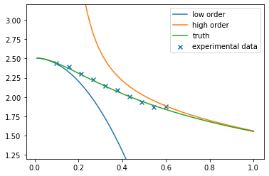
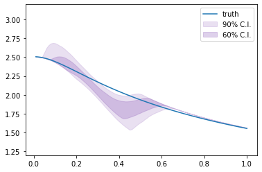

Linear BMM with SAMBA toy models¶
This notebook shows how to use the Bayesian model mixing package Taweret for a toy problem.
Author : Dan Liyanage
Date : 19/21/2022
Steps for linear BMM¶
1. Get Models with a prediction method
2. Choose a Mixing method
3. Estimate the mixture weights (parameters in the mixture function) with user defined calibration method
To execute each step in this notebook we need to import the following from Taweret.
[1]:
import sys
import os
sys.path.insert(0, os.path.abspath('../../../../Taweret'))
[2]:
# Import models with a predict method
from Taweret.models import samba_models as toy_models
# Mixing object with a likelihood method
from Taweret.mix.linear import linear_mix as LM
# Wrapper for the likelihood to be used with Bilby
from Taweret.calibrate.likelihood_wrappers import likelihood_wrapper_for_bilby
[3]:
# For plotting
import matplotlib.pyplot as plt
import seaborn as sns
# For calibration
import bilby
# For other operations
import numpy as np
import os
import shutil
[4]:
m1 = toy_models.loworder(2, 'informative')
m2 = toy_models.highorder(2, 'informative')
truth = toy_models.true_model()
exp = toy_models.exp_data()
[5]:
g = np.linspace(0.1, 0.6, 10)
plot_g = np.linspace(0.01,1,100)
m1_prediction = m1.predict(plot_g)
m2_prediction = m2.predict(plot_g)
true_output = truth.predict(plot_g)
exp_data= exp.predict(g)
[6]:
exp_data
[6]:
(array([2.44061423, 2.39590032, 2.29858531, 2.23260954, 2.1466104 ,
2.0892655 , 2.00872534, 1.93344043, 1.87255364, 1.87554162]),
array([0.02440614, 0.023959 , 0.02298585, 0.0223261 , 0.0214661 ,
0.02089266, 0.02008725, 0.0193344 , 0.01872554, 0.01875542]))
1. The models and the experimental data.¶
[7]:
fig, ax_f = plt.subplots()
ax_f.plot(plot_g, m1_prediction[0].flatten(), label='low order')
ax_f.plot(plot_g, m2_prediction[0].flatten(), label='high order')
ax_f.plot(plot_g, true_output[0], label='truth')
ax_f.scatter(g,exp_data[0], marker='x', label='experimental data')
ax_f.set_ylim(1.2,3.2)
ax_f.legend()
[7]:
<matplotlib.legend.Legend at 0x7fbaba5ae0f0>

2. Choose a Mixing method¶
[8]:
mix_model = LM(m1, m2, g, exp_data[0], exp_data[1], method='switchcos', n_mix=3)
[9]:
mix_model.plot_weights(np.array([0.2, 0.4, 0.3]),plot_g)

[10]:
#mix_model.mix_loglikelihood_test([0.25])
[11]:
mix_model.mix_loglikelihood(np.array([0.2, 0.4, 0.3]))
[11]:
5.96984761399272
[12]:
fig, ax = plt.subplots()
mix_prediction = mix_model.prediction(np.array([0.2, 0.4, 0.3]),plot_g)
ax.plot(plot_g, m1_prediction[0].flatten(), label='low order')
ax.plot(plot_g, m2_prediction[0].flatten(), label='high order')
ax.plot(plot_g, mix_prediction.flatten(), label='BMM prediction')
ax.set_ylim(1.2,3.2)
ax.legend()
[12]:
<matplotlib.legend.Legend at 0x7fbaba876160>

[13]:
# sw = np.linspace(0.01,1,1000)
# likelihood = np.array([mix_model.mix_loglikelihood(np.array([s])) for s in sw]).flatten()
# fig, ax = plt.subplots()
# ax.plot(sw,likelihood,label='Mixture likelihood for step function')
3. Estimating the mixture weights¶
[14]:
likelihood = likelihood_wrapper_for_bilby(mix_model)
Need to speceify a constained prior for switchcos. g1 < g3 < g2 We follow Bilby documentation on how to specefy a prior with constraints https://lscsoft.docs.ligo.org/bilby/prior.html#prior-constraints
[15]:
def convert_x_y_to_z(parameters):
"""
Function to convert between sampled parameters and constraint parameter.
Parameters
----------
parameters: dict
Dictionary containing sampled parameter values, 'theta_0', 'theta_1', 'theta_2'.
Returns
-------
dict: Dictionary with constraint parameter 'z_0, z_1' added.
"""
converted_parameters = parameters.copy()
converted_parameters['z_0'] = parameters['theta_2'] - parameters['theta_0']
converted_parameters['z_1'] = parameters['theta_1'] - parameters['theta_2']
return converted_parameters
[16]:
from bilby.core.prior import PriorDict, Uniform, Constraint, TruncatedNormal
priors = PriorDict(conversion_function=convert_x_y_to_z)
# priors['theta_0'] = Uniform(minimum=0.0, maximum=0.3)
# priors['theta_1'] = Uniform(minimum=0.0, maximum=0.55)
# priors['theta_2'] = Uniform(minimum=0.0, maximum=0.8)
priors['theta_0'] = TruncatedNormal(0.1, 0.05, 0.01, 0.3)
priors['theta_1'] = TruncatedNormal(0.6, 0.05, 0, 0.8)
priors['theta_2'] = TruncatedNormal(0.4, 0.05, 0, 0.55)
priors['z_0'] = Constraint(minimum=0, maximum=1)
priors['z_1'] = Constraint(minimum=0, maximum=1)
[17]:
# A few simple setup steps
label = "switchcos_mixing"
outdir = "outdir"
priors = priors
# priors = dict(
# theta_0=bilby.core.prior.Beta(2,2)
# )
# And run sampler
## If file exists, delete it ##
if os.path.exists(f'{outdir}/{label}_result.json'):
os.remove(f'{outdir}/{label}_result.json')
os.remove(f'{outdir}/{label}_checkpoint_resume.pickle')
os.remove(f'{outdir}/{label}_samples.txt')
#shutil.rmtree(outdir)
result = bilby.run_sampler(
likelihood,
priors,
label=label,
outdir=outdir,
sampler="ptemcee",
ntemps=10,
nwalkers=20,
Tmax=100,
nburn=200,
nsamples=3000, # This is the number of raw samples
threads=5,
)
result.plot_corner()
08:57 bilby INFO : Running for label 'switchcos_mixing', output will be saved to 'outdir'
08:57 bilby INFO : Search parameters:
08:57 bilby INFO : theta_0 = TruncatedNormal(mu=0.1, sigma=0.05, minimum=0.01, maximum=0.3, name=None, latex_label=None, unit=None, boundary=None)
08:57 bilby INFO : theta_1 = TruncatedNormal(mu=0.6, sigma=0.05, minimum=0, maximum=0.8, name=None, latex_label=None, unit=None, boundary=None)
08:57 bilby INFO : theta_2 = TruncatedNormal(mu=0.4, sigma=0.05, minimum=0, maximum=0.55, name=None, latex_label=None, unit=None, boundary=None)
08:57 bilby INFO : z_0 = Constraint(minimum=0, maximum=1, name=None, latex_label=None, unit=None)
08:57 bilby INFO : z_1 = Constraint(minimum=0, maximum=1, name=None, latex_label=None, unit=None)
08:57 bilby INFO : Single likelihood evaluation took 2.414e-04 s
08:57 bilby WARNING : Supplied argument 'npool' not an argument of 'Ptemcee', removing.
08:57 bilby WARNING : Supplied argument 'nburn' not an argument of 'Ptemcee', removing.
08:57 bilby INFO : Using sampler Ptemcee with kwargs {'ntemps': 10, 'nwalkers': 20, 'Tmax': 100, 'betas': None, 'a': 2.0, 'adaptation_lag': 10000, 'adaptation_time': 100, 'random': None, 'adapt': False, 'swap_ratios': False}
08:57 bilby INFO : Using convergence inputs: ConvergenceInputs(autocorr_c=5, autocorr_tol=50, autocorr_tau=1, gradient_tau=0.1, gradient_mean_log_posterior=0.1, Q_tol=1.02, safety=1, burn_in_nact=50, burn_in_fixed_discard=0, mean_logl_frac=0.01, thin_by_nact=0.5, nsamples=3000, ignore_keys_for_tau=None, min_tau=1, niterations_per_check=5)
08:57 bilby INFO : Creating MultiPool with 5 processes
08:57 bilby INFO : Generating pos0 samples
08:57 bilby INFO : Starting to sample
1|0:00:00|nc:1.0e+03|a0:0.20-1.00|swp:0.86-1.00|n:nan<3000|t!nan(+nan,+nan)|q:inf|0.10ms/ev
2|0:00:00|nc:2.0e+03|a0:0.40-0.90|swp:0.87-0.99|n:nan<3000|t!nan(+nan,+nan)|q:inf|0.10ms/ev
3|0:00:00|nc:3.0e+03|a0:0.40-0.87|swp:0.88-1.00|n:nan<3000|t!nan(+nan,+nan)|q:inf|0.09ms/ev
4|0:00:00|nc:4.0e+03|a0:0.50-0.85|swp:0.89-1.00|n:nan<3000|t!nan(+nan,+nan)|q:inf|0.08ms/ev
5|0:00:00|nc:5.0e+03|a0:0.48-0.84|swp:0.88-1.00|n:nan<3000|t!nan(+nan,+nan)|q:inf|0.10ms/ev
6|0:00:00|nc:6.0e+03|a0:0.53-0.83|swp:0.88-1.00|n:nan<3000|t!nan(+nan,+nan)|q:inf|0.11ms/ev
7|0:00:00|nc:7.0e+03|a0:0.54-0.83|swp:0.88-1.00|n:nan<3000|t!nan(+nan,+nan)|q:inf|0.12ms/ev
8|0:00:00|nc:8.0e+03|a0:0.55-0.82|swp:0.89-1.00|n:nan<3000|t!nan(+nan,+nan)|q:inf|0.11ms/ev
9|0:00:00|nc:9.0e+03|a0:0.53-0.80|swp:0.89-1.00|n:nan<3000|t!nan(+nan,+nan)|q:inf|0.11ms/ev
10|0:00:01|nc:1.0e+04|a0:0.56-0.80|swp:0.89-1.00|n:nan<3000|t!nan(+nan,+nan)|q:inf|0.11ms/ev
11|0:00:01|nc:1.1e+04|a0:0.56-0.78|swp:0.89-1.00|n:nan<3000|t!nan(+nan,+nan)|q:inf|0.11ms/ev
12|0:00:01|nc:1.2e+04|a0:0.55-0.78|swp:0.90-1.00|n:nan<3000|t!nan(+nan,+nan)|q:inf|0.11ms/ev
13|0:00:01|nc:1.3e+04|a0:0.55-0.75|swp:0.90-1.00|n:nan<3000|t!nan(+nan,+nan)|q:inf|0.11ms/ev
14|0:00:01|nc:1.4e+04|a0:0.56-0.76|swp:0.90-1.00|n:nan<3000|t!nan(+nan,+nan)|q:inf|0.11ms/ev
15|0:00:01|nc:1.5e+04|a0:0.55-0.75|swp:0.90-1.00|n:nan<3000|t!nan(+nan,+nan)|q:inf|0.11ms/ev
16|0:00:01|nc:1.6e+04|a0:0.55-0.74|swp:0.90-1.00|n:nan<3000|t!nan(+nan,+nan)|q:inf|0.11ms/ev
17|0:00:01|nc:1.7e+04|a0:0.58-0.73|swp:0.90-1.00|n:nan<3000|t!nan(+nan,+nan)|q:inf|0.10ms/ev
18|0:00:01|nc:1.8e+04|a0:0.58-0.73|swp:0.90-1.00|n:nan<3000|t!nan(+nan,+nan)|q:inf|0.10ms/ev
19|0:00:01|nc:1.9e+04|a0:0.58-0.74|swp:0.90-1.00|n:nan<3000|t!nan(+nan,+nan)|q:inf|0.09ms/ev
20|0:00:02|nc:2.0e+04|a0:0.57-0.73|swp:0.90-1.00|n:nan<3000|t!nan(+nan,+nan)|q:inf|0.09ms/ev
21|0:00:02|nc:2.1e+04|a0:0.57-0.72|swp:0.90-1.00|n:nan<3000|t!nan(+nan,+nan)|q:inf|0.10ms/ev
22|0:00:02|nc:2.2e+04|a0:0.57-0.73|swp:0.91-1.00|n:nan<3000|t!nan(+nan,+nan)|q:inf|0.10ms/ev
23|0:00:02|nc:2.3e+04|a0:0.56-0.71|swp:0.91-1.00|n:nan<3000|t!nan(+nan,+nan)|q:inf|0.09ms/ev
24|0:00:02|nc:2.4e+04|a0:0.56-0.72|swp:0.91-1.00|n:nan<3000|t!nan(+nan,+nan)|q:inf|0.08ms/ev
25|0:00:02|nc:2.5e+04|a0:0.56-0.70|swp:0.91-1.00|n:nan<3000|t!nan(+nan,+nan)|q:inf|0.09ms/ev
26|0:00:02|nc:2.6e+04|a0:0.57-0.71|swp:0.91-1.00|n:nan<3000|t!nan(+nan,+nan)|q:inf|0.10ms/ev
27|0:00:02|nc:2.7e+04|a0:0.56-0.70|swp:0.91-1.00|n:nan<3000|t!nan(+nan,+nan)|q:inf|0.11ms/ev
28|0:00:02|nc:2.8e+04|a0:0.54-0.70|swp:0.91-1.00|n:nan<3000|t!nan(+nan,+nan)|q:inf|0.11ms/ev
29|0:00:02|nc:2.9e+04|a0:0.54-0.70|swp:0.91-1.00|n:nan<3000|t!nan(+nan,+nan)|q:inf|0.11ms/ev
30|0:00:03|nc:3.0e+04|a0:0.55-0.69|swp:0.91-1.00|n:nan<3000|t!nan(+nan,+nan)|q:inf|0.11ms/ev
31|0:00:03|nc:3.1e+04|a0:0.55-0.68|swp:0.91-1.00|n:nan<3000|t!nan(+nan,+nan)|q:inf|0.11ms/ev
32|0:00:03|nc:3.2e+04|a0:0.54-0.68|swp:0.91-1.00|n:nan<3000|t!nan(+nan,+nan)|q:inf|0.10ms/ev
33|0:00:03|nc:3.3e+04|a0:0.55-0.68|swp:0.91-1.00|n:nan<3000|t!nan(+nan,+nan)|q:inf|0.09ms/ev
34|0:00:03|nc:3.4e+04|a0:0.56-0.68|swp:0.91-1.00|n:nan<3000|t!nan(+nan,+nan)|q:inf|0.08ms/ev
35|0:00:03|nc:3.5e+04|a0:0.57-0.69|swp:0.91-1.00|n:nan<3000|t!nan(+nan,+nan)|q:inf|0.09ms/ev
36|0:00:03|nc:3.6e+04|a0:0.57-0.69|swp:0.91-1.00|n:nan<3000|t!nan(+nan,+nan)|q:inf|0.10ms/ev
37|0:00:03|nc:3.7e+04|a0:0.57-0.69|swp:0.91-1.00|n:nan<3000|t!nan(+nan,+nan)|q:inf|0.13ms/ev
38|0:00:03|nc:3.8e+04|a0:0.57-0.68|swp:0.91-1.00|n:nan<3000|t!nan(+nan,+nan)|q:inf|0.13ms/ev
39|0:00:04|nc:3.9e+04|a0:0.58-0.68|swp:0.91-1.00|n:nan<3000|t!nan(+nan,+nan)|q:inf|0.12ms/ev
40|0:00:04|nc:4.0e+04|a0:0.57-0.69|swp:0.91-1.00|n:nan<3000|t!nan(+nan,+nan)|q:inf|0.11ms/ev
41|0:00:04|nc:4.1e+04|a0:0.58-0.68|swp:0.91-1.00|n:nan<3000|t!nan(+nan,+nan)|q:inf|0.11ms/ev
42|0:00:04|nc:4.2e+04|a0:0.59-0.68|swp:0.91-1.00|n:nan<3000|t!nan(+nan,+nan)|q:inf|0.12ms/ev
43|0:00:04|nc:4.3e+04|a0:0.58-0.69|swp:0.91-1.00|n:-580<3000|t!1(+nan,+0.08)|q:1.00|0.10ms/ev
44|0:00:04|nc:4.4e+04|a0:0.59-0.68|swp:0.91-1.00|n:nan<3000|t!nan(+nan,+nan)|q:inf|0.11ms/ev
45|0:00:04|nc:4.5e+04|a0:0.58-0.69|swp:0.91-1.00|n:nan<3000|t!nan(+nan,+nan)|q:inf|0.12ms/ev
46|0:00:04|nc:4.6e+04|a0:0.59-0.68|swp:0.91-1.00|n:nan<3000|t!nan(+nan,+nan)|q:inf|0.14ms/ev
47|0:00:05|nc:4.7e+04|a0:0.59-0.68|swp:0.91-1.00|n:nan<3000|t!nan(+nan,+nan)|q:inf|0.14ms/ev
48|0:00:05|nc:4.8e+04|a0:0.60-0.68|swp:0.91-1.00|n:nan<3000|t!nan(+nan,+nan)|q:inf|0.13ms/ev
49|0:00:05|nc:4.9e+04|a0:0.60-0.69|swp:0.91-1.00|n:nan<3000|t!nan(+nan,+nan)|q:inf|0.14ms/ev
50|0:00:05|nc:5.0e+04|a0:0.60-0.69|swp:0.91-1.00|n:nan<3000|t!nan(+nan,+nan)|q:inf|0.13ms/ev
51|0:00:05|nc:5.1e+04|a0:0.60-0.70|swp:0.91-1.00|n:nan<3000|t!nan(+nan,+nan)|q:inf|0.12ms/ev
52|0:00:05|nc:5.2e+04|a0:0.60-0.69|swp:0.91-1.00|n:nan<3000|t!nan(+nan,+nan)|q:inf|0.11ms/ev
53|0:00:05|nc:5.3e+04|a0:0.59-0.70|swp:0.91-1.00|n:nan<3000|t!nan(+nan,+nan)|q:inf|0.12ms/ev
54|0:00:05|nc:5.4e+04|a0:0.59-0.70|swp:0.91-1.00|n:nan<3000|t!nan(+nan,+nan)|q:inf|0.13ms/ev
55|0:00:06|nc:5.5e+04|a0:0.59-0.70|swp:0.91-1.00|n:nan<3000|t!nan(+nan,+nan)|q:inf|0.13ms/ev
56|0:00:06|nc:5.6e+04|a0:0.60-0.70|swp:0.91-1.00|n:nan<3000|t!nan(+nan,+nan)|q:inf|0.13ms/ev
57|0:00:06|nc:5.7e+04|a0:0.60-0.69|swp:0.91-1.00|n:nan<3000|t!nan(+nan,+nan)|q:inf|0.13ms/ev
58|0:00:06|nc:5.8e+04|a0:0.60-0.70|swp:0.91-1.00|n:-580<3000|t!1(+nan,+0.09)|q:1.02|0.13ms/ev
59|0:00:06|nc:5.9e+04|a0:0.60-0.69|swp:0.91-1.00|n:-560<3000|t!1(+nan,+0.07)|q:1.01|0.12ms/ev
60|0:00:06|nc:6.0e+04|a0:0.60-0.70|swp:0.91-1.00|n:-540<3000|t!1(+nan,+0.05)|q:1.01|0.12ms/ev
61|0:00:06|nc:6.1e+04|a0:0.60-0.70|swp:0.91-1.00|n:-520<3000|t!1(+nan,+0.07)|q:1.01|0.11ms/ev
62|0:00:06|nc:6.2e+04|a0:0.61-0.69|swp:0.91-1.00|n:-500<3000|t!1(+nan,+0.06)|q:1.01|0.11ms/ev
63|0:00:06|nc:6.3e+04|a0:0.61-0.69|swp:0.91-1.00|n:-480<3000|t!1(+nan,+0.08)|q:1.00|0.11ms/ev
64|0:00:07|nc:6.4e+04|a0:0.60-0.69|swp:0.91-1.00|n:-460<3000|t!1(+nan,+0.08)|q:1.00|0.12ms/ev
65|0:00:07|nc:6.5e+04|a0:0.61-0.69|swp:0.91-1.00|n:-440<3000|t!1(+nan,+0.06)|q:1.00|0.12ms/ev
66|0:00:07|nc:6.6e+04|a0:0.61-0.69|swp:0.91-1.00|n:-420<3000|t!1(+nan,+0.07)|q:1.01|0.11ms/ev
67|0:00:07|nc:6.7e+04|a0:0.61-0.69|swp:0.91-1.00|n:nan<3000|t!nan(+nan,+nan)|q:inf|0.11ms/ev
68|0:00:07|nc:6.8e+04|a0:0.61-0.69|swp:0.91-1.00|n:nan<3000|t!nan(+nan,+nan)|q:inf|0.10ms/ev
69|0:00:07|nc:6.9e+04|a0:0.60-0.68|swp:0.91-1.00|n:nan<3000|t!nan(+nan,+nan)|q:inf|0.11ms/ev
70|0:00:07|nc:7.0e+04|a0:0.60-0.68|swp:0.91-1.00|n:nan<3000|t!nan(+nan,+nan)|q:inf|0.11ms/ev
71|0:00:07|nc:7.1e+04|a0:0.59-0.68|swp:0.91-1.00|n:nan<3000|t!nan(+nan,+nan)|q:inf|0.11ms/ev
72|0:00:07|nc:7.2e+04|a0:0.60-0.68|swp:0.91-1.00|n:nan<3000|t!nan(+nan,+nan)|q:inf|0.10ms/ev
73|0:00:08|nc:7.3e+04|a0:0.59-0.68|swp:0.91-1.00|n:nan<3000|t!nan(+nan,+nan)|q:inf|0.10ms/ev
74|0:00:08|nc:7.4e+04|a0:0.59-0.69|swp:0.91-1.00|n:nan<3000|t!nan(+nan,+nan)|q:inf|0.10ms/ev
75|0:00:08|nc:7.5e+04|a0:0.59-0.69|swp:0.91-1.00|n:nan<3000|t!nan(+nan,+nan)|q:inf|0.10ms/ev
76|0:00:08|nc:7.6e+04|a0:0.60-0.68|swp:0.91-1.00|n:nan<3000|t!nan(+nan,+nan)|q:inf|0.10ms/ev
77|0:00:08|nc:7.7e+04|a0:0.60-0.69|swp:0.91-1.00|n:nan<3000|t!nan(+nan,+nan)|q:inf|0.10ms/ev
78|0:00:08|nc:7.8e+04|a0:0.60-0.68|swp:0.91-1.00|n:nan<3000|t!nan(+nan,+nan)|q:inf|0.10ms/ev
79|0:00:08|nc:7.9e+04|a0:0.60-0.68|swp:0.91-1.00|n:nan<3000|t!nan(+nan,+nan)|q:inf|0.09ms/ev
80|0:00:08|nc:8.0e+04|a0:0.60-0.69|swp:0.91-1.00|n:nan<3000|t!nan(+nan,+nan)|q:inf|0.10ms/ev
81|0:00:08|nc:8.1e+04|a0:0.61-0.69|swp:0.91-1.00|n:nan<3000|t!nan(+nan,+nan)|q:inf|0.10ms/ev
82|0:00:08|nc:8.2e+04|a0:0.61-0.69|swp:0.91-1.00|n:nan<3000|t!nan(+nan,+nan)|q:inf|0.10ms/ev
83|0:00:09|nc:8.3e+04|a0:0.61-0.69|swp:0.91-1.00|n:nan<3000|t!nan(+nan,+nan)|q:inf|0.10ms/ev
84|0:00:09|nc:8.4e+04|a0:0.61-0.68|swp:0.91-1.00|n:nan<3000|t!nan(+nan,+nan)|q:inf|0.09ms/ev
85|0:00:09|nc:8.5e+04|a0:0.61-0.68|swp:0.91-1.00|n:nan<3000|t!nan(+nan,+nan)|q:inf|0.10ms/ev
86|0:00:09|nc:8.6e+04|a0:0.62-0.68|swp:0.91-1.00|n:nan<3000|t!nan(+nan,+nan)|q:inf|0.10ms/ev
87|0:00:09|nc:8.7e+04|a0:0.61-0.68|swp:0.91-1.00|n:nan<3000|t!nan(+nan,+nan)|q:inf|0.10ms/ev
88|0:00:09|nc:8.8e+04|a0:0.61-0.68|swp:0.91-1.00|n:nan<3000|t!nan(+nan,+nan)|q:inf|0.10ms/ev
89|0:00:09|nc:8.9e+04|a0:0.61-0.68|swp:0.91-1.00|n:nan<3000|t!nan(+nan,+nan)|q:inf|0.10ms/ev
90|0:00:09|nc:9.0e+04|a0:0.61-0.68|swp:0.91-1.00|n:nan<3000|t!nan(+nan,+nan)|q:inf|0.10ms/ev
91|0:00:09|nc:9.1e+04|a0:0.61-0.68|swp:0.91-1.00|n:nan<3000|t!nan(+nan,+nan)|q:inf|0.10ms/ev
92|0:00:09|nc:9.2e+04|a0:0.61-0.68|swp:0.91-1.00|n:nan<3000|t!nan(+nan,+nan)|q:inf|0.10ms/ev
93|0:00:10|nc:9.3e+04|a0:0.61-0.68|swp:0.91-1.00|n:nan<3000|t!nan(+nan,+nan)|q:inf|0.10ms/ev
94|0:00:10|nc:9.4e+04|a0:0.61-0.68|swp:0.91-1.00|n:nan<3000|t!nan(+nan,+nan)|q:inf|0.10ms/ev
95|0:00:10|nc:9.5e+04|a0:0.61-0.68|swp:0.91-1.00|n:nan<3000|t!nan(+nan,+nan)|q:inf|0.10ms/ev
96|0:00:10|nc:9.6e+04|a0:0.61-0.68|swp:0.91-1.00|n:nan<3000|t!nan(+nan,+nan)|q:inf|0.09ms/ev
97|0:00:10|nc:9.7e+04|a0:0.61-0.68|swp:0.91-1.00|n:nan<3000|t!nan(+nan,+nan)|q:inf|0.09ms/ev
98|0:00:10|nc:9.8e+04|a0:0.61-0.69|swp:0.91-1.00|n:nan<3000|t!nan(+nan,+nan)|q:inf|0.10ms/ev
99|0:00:10|nc:9.9e+04|a0:0.61-0.68|swp:0.91-1.00|n:nan<3000|t!nan(+nan,+nan)|q:inf|0.10ms/ev
100|0:00:10|nc:1.0e+05|a0:0.61-0.68|swp:0.91-1.00|n:nan<3000|t!nan(+nan,+nan)|q:inf|0.10ms/ev
101|0:00:10|nc:1.0e+05|a0:0.61-0.68|swp:0.91-1.00|n:nan<3000|t!nan(+nan,+nan)|q:inf|0.10ms/ev
102|0:00:10|nc:1.0e+05|a0:0.61-0.68|swp:0.91-1.00|n:nan<3000|t!nan(+nan,+nan)|q:inf|0.10ms/ev
103|0:00:11|nc:1.0e+05|a0:0.61-0.68|swp:0.91-1.00|n:nan<3000|t!nan(+nan,+nan)|q:inf|0.11ms/ev
104|0:00:11|nc:1.0e+05|a0:0.61-0.68|swp:0.91-1.00|n:-580<3000|t!1(+nan,+0.05)|q:1.01|0.11ms/ev
105|0:00:11|nc:1.0e+05|a0:0.61-0.67|swp:0.91-1.00|n:-560<3000|t!1(+nan,+0.02)|q:1.01|0.11ms/ev
106|0:00:11|nc:1.1e+05|a0:0.61-0.67|swp:0.91-1.00|n:-540<3000|t!1(+nan,+0.03)|q:1.01|0.11ms/ev
107|0:00:11|nc:1.1e+05|a0:0.61-0.67|swp:0.91-1.00|n:-520<3000|t!1(+nan,+0.03)|q:1.01|0.10ms/ev
108|0:00:11|nc:1.1e+05|a0:0.61-0.67|swp:0.91-1.00|n:-500<3000|t!1(+nan,+0.04)|q:1.01|0.10ms/ev
109|0:00:11|nc:1.1e+05|a0:0.61-0.67|swp:0.91-1.00|n:-480<3000|t!1(+nan,+0.06)|q:1.01|0.11ms/ev
110|0:00:11|nc:1.1e+05|a0:0.61-0.67|swp:0.91-1.00|n:nan<3000|t!nan(+nan,+nan)|q:inf|0.11ms/ev
111|0:00:11|nc:1.1e+05|a0:0.61-0.67|swp:0.91-1.00|n:nan<3000|t!nan(+nan,+nan)|q:inf|0.11ms/ev
112|0:00:12|nc:1.1e+05|a0:0.61-0.67|swp:0.91-1.00|n:nan<3000|t!nan(+nan,+nan)|q:inf|0.11ms/ev
113|0:00:12|nc:1.1e+05|a0:0.61-0.67|swp:0.91-1.00|n:nan<3000|t!nan(+nan,+nan)|q:inf|0.11ms/ev
114|0:00:12|nc:1.1e+05|a0:0.61-0.68|swp:0.91-1.00|n:nan<3000|t!nan(+nan,+nan)|q:inf|0.10ms/ev
115|0:00:12|nc:1.2e+05|a0:0.61-0.67|swp:0.91-1.00|n:nan<3000|t!nan(+nan,+nan)|q:inf|0.10ms/ev
116|0:00:12|nc:1.2e+05|a0:0.61-0.68|swp:0.91-1.00|n:nan<3000|t!nan(+nan,+nan)|q:inf|0.09ms/ev
117|0:00:12|nc:1.2e+05|a0:0.61-0.68|swp:0.91-1.00|n:nan<3000|t!nan(+nan,+nan)|q:inf|0.11ms/ev
118|0:00:12|nc:1.2e+05|a0:0.61-0.67|swp:0.91-1.00|n:nan<3000|t!nan(+nan,+nan)|q:inf|0.12ms/ev
119|0:00:12|nc:1.2e+05|a0:0.61-0.67|swp:0.91-1.00|n:nan<3000|t!nan(+nan,+nan)|q:inf|0.12ms/ev
120|0:00:12|nc:1.2e+05|a0:0.61-0.67|swp:0.91-1.00|n:nan<3000|t!nan(+nan,+nan)|q:inf|0.10ms/ev
121|0:00:12|nc:1.2e+05|a0:0.61-0.67|swp:0.91-1.00|n:nan<3000|t!nan(+nan,+nan)|q:inf|0.10ms/ev
122|0:00:13|nc:1.2e+05|a0:0.61-0.67|swp:0.91-1.00|n:nan<3000|t!nan(+nan,+nan)|q:inf|0.10ms/ev
123|0:00:13|nc:1.2e+05|a0:0.61-0.67|swp:0.91-1.00|n:nan<3000|t!nan(+nan,+nan)|q:inf|0.10ms/ev
124|0:00:13|nc:1.2e+05|a0:0.61-0.67|swp:0.91-1.00|n:nan<3000|t!nan(+nan,+nan)|q:inf|0.11ms/ev
125|0:00:13|nc:1.2e+05|a0:0.61-0.68|swp:0.91-1.00|n:nan<3000|t!nan(+nan,+nan)|q:inf|0.11ms/ev
126|0:00:13|nc:1.3e+05|a0:0.61-0.67|swp:0.91-1.00|n:nan<3000|t!nan(+nan,+nan)|q:inf|0.11ms/ev
127|0:00:13|nc:1.3e+05|a0:0.62-0.68|swp:0.91-1.00|n:nan<3000|t!nan(+nan,+nan)|q:inf|0.10ms/ev
128|0:00:13|nc:1.3e+05|a0:0.61-0.68|swp:0.91-1.00|n:nan<3000|t!nan(+nan,+nan)|q:inf|0.11ms/ev
129|0:00:13|nc:1.3e+05|a0:0.62-0.67|swp:0.91-1.00|n:-580<3000|t!1(+nan,+0.06)|q:1.01|0.11ms/ev
130|0:00:13|nc:1.3e+05|a0:0.62-0.67|swp:0.91-1.00|n:-560<3000|t!1(+nan,+0.08)|q:1.01|0.11ms/ev
131|0:00:14|nc:1.3e+05|a0:0.61-0.67|swp:0.91-1.00|n:-540<3000|t!1(+nan,+0.05)|q:1.01|0.11ms/ev
132|0:00:14|nc:1.3e+05|a0:0.61-0.68|swp:0.91-1.00|n:-520<3000|t!1(+nan,+0.06)|q:1.01|0.11ms/ev
133|0:00:14|nc:1.3e+05|a0:0.61-0.68|swp:0.91-1.00|n:-500<3000|t!1(+nan,+0.04)|q:1.01|0.11ms/ev
134|0:00:14|nc:1.3e+05|a0:0.62-0.67|swp:0.91-1.00|n:-480<3000|t!1(+nan,+0.07)|q:1.01|0.11ms/ev
135|0:00:14|nc:1.4e+05|a0:0.62-0.67|swp:0.91-1.00|n:-460<3000|t!1(+nan,+0.06)|q:1.00|0.12ms/ev
136|0:00:14|nc:1.4e+05|a0:0.61-0.67|swp:0.91-1.00|n:-440<3000|t!1(+nan,+0.07)|q:1.00|0.12ms/ev
137|0:00:14|nc:1.4e+05|a0:0.61-0.67|swp:0.91-1.00|n:-420<3000|t!1(+nan,+0.06)|q:1.00|0.12ms/ev
138|0:00:14|nc:1.4e+05|a0:0.61-0.67|swp:0.91-1.00|n:-400<3000|t!1(+nan,+0.06)|q:1.00|0.11ms/ev
139|0:00:14|nc:1.4e+05|a0:0.61-0.67|swp:0.91-1.00|n:-380<3000|t!1(+nan,+0.03)|q:1.00|0.11ms/ev
140|0:00:15|nc:1.4e+05|a0:0.61-0.67|swp:0.91-1.00|n:-360<3000|t!1(+nan,+0.04)|q:1.00|0.11ms/ev
141|0:00:15|nc:1.4e+05|a0:0.61-0.68|swp:0.91-1.00|n:-340<3000|t!1(+nan,+0.08)|q:1.00|0.11ms/ev
142|0:00:15|nc:1.4e+05|a0:0.61-0.67|swp:0.91-1.00|n:-320<3000|t!1(+nan,+0.08)|q:1.00|0.11ms/ev
143|0:00:15|nc:1.4e+05|a0:0.61-0.67|swp:0.91-1.00|n:-300<3000|t!1(+nan,+0.08)|q:1.00|0.12ms/ev
144|0:00:15|nc:1.4e+05|a0:0.60-0.67|swp:0.91-1.00|n:-280<3000|t!1(+nan,+0.07)|q:1.00|0.13ms/ev
145|0:00:15|nc:1.4e+05|a0:0.60-0.67|swp:0.91-1.00|n:-260<3000|t!1(+nan,+0.07)|q:1.00|0.14ms/ev
146|0:00:15|nc:1.5e+05|a0:0.60-0.68|swp:0.91-1.00|n:-240<3000|t!1(+nan,+0.06)|q:1.00|0.14ms/ev
147|0:00:15|nc:1.5e+05|a0:0.60-0.68|swp:0.91-1.00|n:-220<3000|t!1(+nan,+0.06)|q:1.00|0.12ms/ev
148|0:00:16|nc:1.5e+05|a0:0.60-0.68|swp:0.91-1.00|n:-200<3000|t!1(+nan,+0.05)|q:1.00|0.11ms/ev
149|0:00:16|nc:1.5e+05|a0:0.60-0.68|swp:0.91-1.00|n:-180<3000|t!1(+nan,+0.05)|q:1.00|0.11ms/ev
150|0:00:16|nc:1.5e+05|a0:0.61-0.68|swp:0.91-1.00|n:-160<3000|t!1(+nan,+0.06)|q:1.00|0.11ms/ev
151|0:00:16|nc:1.5e+05|a0:0.61-0.68|swp:0.91-1.00|n:-140<3000|t!1(+nan,+0.05)|q:1.00|0.11ms/ev
152|0:00:16|nc:1.5e+05|a0:0.61-0.68|swp:0.91-1.00|n:-120<3000|t!1(+nan,+0.07)|q:1.00|0.11ms/ev
153|0:00:16|nc:1.5e+05|a0:0.61-0.68|swp:0.91-1.00|n:-100<3000|t!1(+nan,+0.04)|q:1.00|0.12ms/ev
154|0:00:16|nc:1.5e+05|a0:0.61-0.68|swp:0.91-1.00|n:-80<3000|t!1(+nan,+0.06)|q:1.00|0.12ms/ev
155|0:00:16|nc:1.6e+05|a0:0.61-0.68|swp:0.91-1.00|n:-60<3000|t!1(+nan,+0.07)|q:1.00|0.12ms/ev
156|0:00:16|nc:1.6e+05|a0:0.61-0.68|swp:0.91-1.00|n:-40<3000|t!1(+nan,+0.06)|q:1.00|0.11ms/ev
157|0:00:17|nc:1.6e+05|a0:0.61-0.68|swp:0.91-1.00|n:-20<3000|t!1(+nan,+0.06)|q:1.00|0.12ms/ev
158|0:00:17|nc:1.6e+05|a0:0.61-0.68|swp:0.91-1.00|n:0<3000|t!1(+nan,+0.04)|q:1.00|0.12ms/ev
159|0:00:17|nc:1.6e+05|a0:0.60-0.68|swp:0.91-1.00|n:20<3000|t!1(+nan,+0.07)|q:1.00|0.12ms/ev
160|0:00:17|nc:1.6e+05|a0:0.60-0.68|swp:0.91-1.00|n:40<3000|t!1(+nan,+0.07)|q:1.00|0.11ms/ev
161|0:00:17|nc:1.6e+05|a0:0.60-0.68|swp:0.91-1.00|n:60<3000|t!1(+nan,+0.07)|q:1.00|0.10ms/ev
162|0:00:17|nc:1.6e+05|a0:0.60-0.68|swp:0.91-1.00|n:80<3000|t!1(+nan,+0.07)|q:1.00|0.10ms/ev
163|0:00:17|nc:1.6e+05|a0:0.60-0.68|swp:0.91-1.00|n:-900<3000|t!2(+nan,+0.10)|q:1.00|0.10ms/ev
164|0:00:17|nc:1.6e+05|a0:0.60-0.68|swp:0.91-1.00|n:-880<3000|t!2(+nan,+0.07)|q:1.00|0.10ms/ev
165|0:00:17|nc:1.6e+05|a0:0.60-0.68|swp:0.91-1.00|n:-860<3000|t!2(+nan,+0.09)|q:1.00|0.10ms/ev
166|0:00:18|nc:1.7e+05|a0:0.60-0.68|swp:0.91-1.00|n:160<3000|t!1(+nan,+0.06)|q:1.00|0.10ms/ev
167|0:00:18|nc:1.7e+05|a0:0.60-0.68|swp:0.91-1.00|n:180<3000|t!1(+nan,+0.05)|q:1.00|0.10ms/ev
168|0:00:18|nc:1.7e+05|a0:0.60-0.68|swp:0.91-1.00|n:200<3000|t!1(+nan,+0.07)|q:1.00|0.10ms/ev
169|0:00:18|nc:1.7e+05|a0:0.60-0.68|swp:0.91-1.00|n:-780<3000|t!2(+nan,+0.06)|q:1.00|0.11ms/ev
170|0:00:18|nc:1.7e+05|a0:0.60-0.67|swp:0.91-1.00|n:240<3000|t=1(+0.06,+0.06)|q:1.00|0.12ms/ev
171|0:00:18|nc:1.7e+05|a0:0.60-0.67|swp:0.91-1.00|n:-740<3000|t!2(+0.04,+0.07)|q:1.00|0.16ms/ev
172|0:00:18|nc:1.7e+05|a0:0.60-0.67|swp:0.91-1.00|n:nan<3000|t!nan(+nan,+nan)|q:inf|0.17ms/ev
173|0:00:18|nc:1.7e+05|a0:0.60-0.67|swp:0.91-1.00|n:nan<3000|t!nan(+nan,+nan)|q:inf|0.15ms/ev
174|0:00:19|nc:1.7e+05|a0:0.60-0.67|swp:0.91-1.00|n:nan<3000|t!nan(+nan,+nan)|q:inf|0.11ms/ev
175|0:00:19|nc:1.8e+05|a0:0.60-0.67|swp:0.91-1.00|n:nan<3000|t!nan(+nan,+nan)|q:inf|0.09ms/ev
176|0:00:19|nc:1.8e+05|a0:0.60-0.67|swp:0.91-1.00|n:nan<3000|t!nan(+nan,+nan)|q:inf|0.10ms/ev
177|0:00:19|nc:1.8e+05|a0:0.60-0.67|swp:0.91-1.00|n:nan<3000|t!nan(+nan,+nan)|q:inf|0.10ms/ev
178|0:00:19|nc:1.8e+05|a0:0.60-0.67|swp:0.91-1.00|n:nan<3000|t!nan(+nan,+nan)|q:inf|0.10ms/ev
179|0:00:19|nc:1.8e+05|a0:0.60-0.67|swp:0.91-1.00|n:nan<3000|t!nan(+nan,+nan)|q:inf|0.10ms/ev
180|0:00:19|nc:1.8e+05|a0:0.60-0.67|swp:0.91-1.00|n:nan<3000|t!nan(+nan,+nan)|q:inf|0.10ms/ev
181|0:00:19|nc:1.8e+05|a0:0.60-0.67|swp:0.91-1.00|n:nan<3000|t!nan(+nan,+nan)|q:inf|0.10ms/ev
182|0:00:19|nc:1.8e+05|a0:0.60-0.67|swp:0.91-1.00|n:nan<3000|t!nan(+nan,+nan)|q:inf|0.12ms/ev
183|0:00:19|nc:1.8e+05|a0:0.60-0.67|swp:0.91-1.00|n:nan<3000|t!nan(+nan,+nan)|q:inf|0.12ms/ev
184|0:00:20|nc:1.8e+05|a0:0.60-0.67|swp:0.91-1.00|n:nan<3000|t!nan(+nan,+nan)|q:inf|0.12ms/ev
185|0:00:20|nc:1.8e+05|a0:0.60-0.67|swp:0.91-1.00|n:nan<3000|t!nan(+nan,+nan)|q:inf|0.10ms/ev
186|0:00:20|nc:1.9e+05|a0:0.60-0.67|swp:0.91-1.00|n:nan<3000|t!nan(+nan,+nan)|q:inf|0.10ms/ev
187|0:00:20|nc:1.9e+05|a0:0.60-0.67|swp:0.91-1.00|n:nan<3000|t!nan(+nan,+nan)|q:inf|0.12ms/ev
188|0:00:20|nc:1.9e+05|a0:0.60-0.67|swp:0.91-1.00|n:nan<3000|t!nan(+nan,+nan)|q:inf|0.12ms/ev
189|0:00:20|nc:1.9e+05|a0:0.60-0.67|swp:0.91-1.00|n:nan<3000|t!nan(+nan,+nan)|q:inf|0.12ms/ev
190|0:00:20|nc:1.9e+05|a0:0.60-0.67|swp:0.91-1.00|n:nan<3000|t!nan(+nan,+nan)|q:inf|0.10ms/ev
191|0:00:20|nc:1.9e+05|a0:0.60-0.67|swp:0.91-1.00|n:nan<3000|t!nan(+nan,+nan)|q:inf|0.10ms/ev
192|0:00:20|nc:1.9e+05|a0:0.60-0.67|swp:0.91-1.00|n:nan<3000|t!nan(+nan,+nan)|q:inf|0.10ms/ev
193|0:00:21|nc:1.9e+05|a0:0.60-0.67|swp:0.91-1.00|n:nan<3000|t!nan(+nan,+nan)|q:inf|0.10ms/ev
194|0:00:21|nc:1.9e+05|a0:0.60-0.67|swp:0.91-1.00|n:nan<3000|t!nan(+nan,+nan)|q:inf|0.11ms/ev
195|0:00:21|nc:2.0e+05|a0:0.60-0.67|swp:0.91-1.00|n:nan<3000|t!nan(+nan,+nan)|q:inf|0.11ms/ev
196|0:00:21|nc:2.0e+05|a0:0.60-0.67|swp:0.91-1.00|n:-580<3000|t!1(+nan,+0.07)|q:1.01|0.11ms/ev
197|0:00:21|nc:2.0e+05|a0:0.60-0.67|swp:0.91-1.00|n:-560<3000|t!1(+nan,+0.08)|q:1.01|0.10ms/ev
198|0:00:21|nc:2.0e+05|a0:0.60-0.67|swp:0.91-1.00|n:-540<3000|t!1(+nan,+0.08)|q:1.01|0.10ms/ev
199|0:00:21|nc:2.0e+05|a0:0.60-0.67|swp:0.91-1.00|n:-520<3000|t!1(+nan,+0.07)|q:1.02|0.10ms/ev
200|0:00:21|nc:2.0e+05|a0:0.60-0.67|swp:0.91-1.00|n:-500<3000|t!1(+nan,+0.10)|q:1.01|0.10ms/ev
201|0:00:21|nc:2.0e+05|a0:0.60-0.67|swp:0.91-1.00|n:-480<3000|t!1(+nan,+0.08)|q:1.02|0.10ms/ev
202|0:00:21|nc:2.0e+05|a0:0.60-0.67|swp:0.91-1.00|n:-460<3000|t!1(+nan,+0.06)|q:1.01|0.10ms/ev
203|0:00:22|nc:2.0e+05|a0:0.60-0.67|swp:0.91-1.00|n:-440<3000|t!1(+nan,+0.06)|q:1.01|0.11ms/ev
204|0:00:22|nc:2.0e+05|a0:0.60-0.67|swp:0.91-1.00|n:-420<3000|t!1(+nan,+0.06)|q:1.01|0.12ms/ev
205|0:00:22|nc:2.0e+05|a0:0.60-0.67|swp:0.91-1.00|n:-400<3000|t!1(+nan,+0.06)|q:1.01|0.13ms/ev
206|0:00:22|nc:2.1e+05|a0:0.61-0.67|swp:0.91-1.00|n:-380<3000|t!1(+nan,+0.04)|q:1.01|0.13ms/ev
207|0:00:22|nc:2.1e+05|a0:0.60-0.66|swp:0.91-1.00|n:-360<3000|t!1(+nan,+0.06)|q:1.01|0.15ms/ev
208|0:00:22|nc:2.1e+05|a0:0.60-0.67|swp:0.91-1.00|n:-340<3000|t!1(+nan,+0.06)|q:1.01|0.16ms/ev
209|0:00:23|nc:2.1e+05|a0:0.60-0.67|swp:0.91-1.00|n:-320<3000|t!1(+nan,+0.09)|q:1.01|0.17ms/ev
210|0:00:23|nc:2.1e+05|a0:0.60-0.66|swp:0.91-1.00|n:-300<3000|t!1(+nan,+0.08)|q:1.01|0.16ms/ev
211|0:00:23|nc:2.1e+05|a0:0.60-0.66|swp:0.91-1.00|n:-280<3000|t!1(+nan,+0.09)|q:1.01|0.16ms/ev
212|0:00:23|nc:2.1e+05|a0:0.60-0.66|swp:0.91-1.00|n:-260<3000|t!1(+nan,+0.08)|q:1.01|0.15ms/ev
213|0:00:23|nc:2.1e+05|a0:0.60-0.66|swp:0.91-1.00|n:-240<3000|t!1(+nan,+0.04)|q:1.01|0.16ms/ev
214|0:00:23|nc:2.1e+05|a0:0.60-0.66|swp:0.91-1.00|n:-220<3000|t!1(+nan,+0.04)|q:1.01|0.15ms/ev
215|0:00:23|nc:2.2e+05|a0:0.60-0.66|swp:0.91-1.00|n:-200<3000|t!1(+nan,+0.08)|q:1.01|0.15ms/ev
216|0:00:24|nc:2.2e+05|a0:0.61-0.66|swp:0.91-1.00|n:-180<3000|t!1(+nan,+0.07)|q:1.01|0.13ms/ev
217|0:00:24|nc:2.2e+05|a0:0.61-0.66|swp:0.91-1.00|n:-160<3000|t!1(+nan,+0.09)|q:1.01|0.13ms/ev
218|0:00:24|nc:2.2e+05|a0:0.61-0.66|swp:0.91-1.00|n:-140<3000|t!1(+nan,+0.06)|q:1.01|0.13ms/ev
219|0:00:24|nc:2.2e+05|a0:0.61-0.66|swp:0.91-1.00|n:-120<3000|t!1(+nan,+0.06)|q:1.01|0.14ms/ev
220|0:00:24|nc:2.2e+05|a0:0.61-0.66|swp:0.91-1.00|n:-100<3000|t!1(+nan,+0.04)|q:1.01|0.15ms/ev
221|0:00:24|nc:2.2e+05|a0:0.61-0.66|swp:0.91-1.00|n:-80<3000|t!1(+nan,+0.04)|q:1.01|0.16ms/ev
222|0:00:24|nc:2.2e+05|a0:0.61-0.66|swp:0.91-1.00|n:-60<3000|t!1(+nan,+0.05)|q:1.01|0.14ms/ev
223|0:00:24|nc:2.2e+05|a0:0.61-0.66|swp:0.91-1.00|n:-40<3000|t!1(+nan,+0.05)|q:1.01|0.12ms/ev
224|0:00:25|nc:2.2e+05|a0:0.61-0.66|swp:0.91-1.00|n:-20<3000|t!1(+nan,+0.06)|q:1.01|0.13ms/ev
225|0:00:25|nc:2.2e+05|a0:0.61-0.66|swp:0.91-1.00|n:0<3000|t!1(+nan,+0.07)|q:1.01|0.13ms/ev
226|0:00:25|nc:2.3e+05|a0:0.61-0.66|swp:0.91-1.00|n:20<3000|t!1(+nan,+0.06)|q:1.01|0.14ms/ev
227|0:00:25|nc:2.3e+05|a0:0.61-0.66|swp:0.91-1.00|n:40<3000|t!1(+nan,+0.07)|q:1.01|0.12ms/ev
228|0:00:25|nc:2.3e+05|a0:0.61-0.66|swp:0.91-1.00|n:60<3000|t!1(+nan,+0.06)|q:1.01|0.11ms/ev
229|0:00:25|nc:2.3e+05|a0:0.61-0.66|swp:0.91-1.00|n:80<3000|t!1(+nan,+0.08)|q:1.01|0.11ms/ev
230|0:00:25|nc:2.3e+05|a0:0.61-0.66|swp:0.91-1.00|n:100<3000|t!1(+nan,+0.08)|q:1.01|0.11ms/ev
231|0:00:25|nc:2.3e+05|a0:0.61-0.66|swp:0.91-1.00|n:120<3000|t!1(+nan,+0.07)|q:1.01|0.12ms/ev
232|0:00:26|nc:2.3e+05|a0:0.61-0.66|swp:0.91-1.00|n:140<3000|t!1(+nan,+0.06)|q:1.01|0.11ms/ev
233|0:00:26|nc:2.3e+05|a0:0.61-0.66|swp:0.91-1.00|n:160<3000|t!1(+nan,+0.06)|q:1.00|0.11ms/ev
234|0:00:26|nc:2.3e+05|a0:0.61-0.66|swp:0.91-1.00|n:180<3000|t!1(+nan,+0.06)|q:1.00|0.11ms/ev
235|0:00:26|nc:2.4e+05|a0:0.61-0.66|swp:0.91-1.00|n:200<3000|t!1(+nan,+0.07)|q:1.00|0.12ms/ev
236|0:00:26|nc:2.4e+05|a0:0.61-0.66|swp:0.91-1.00|n:220<3000|t!1(+nan,+0.06)|q:1.00|0.11ms/ev
237|0:00:26|nc:2.4e+05|a0:0.61-0.66|swp:0.91-1.00|n:-760<3000|t!2(+0.04,+0.06)|q:1.00|0.11ms/ev
238|0:00:26|nc:2.4e+05|a0:0.61-0.66|swp:0.91-1.00|n:-740<3000|t!2(+0.04,+0.06)|q:1.00|0.11ms/ev
239|0:00:26|nc:2.4e+05|a0:0.61-0.66|swp:0.91-1.00|n:-720<3000|t!2(+0.04,+0.09)|q:1.00|0.11ms/ev
240|0:00:26|nc:2.4e+05|a0:0.61-0.66|swp:0.91-1.00|n:-700<3000|t!2(+0.03,+0.10)|q:1.00|0.11ms/ev
241|0:00:27|nc:2.4e+05|a0:0.61-0.66|swp:0.91-1.00|n:-680<3000|t!2(+0.03,+0.11)|q:1.00|0.11ms/ev
242|0:00:27|nc:2.4e+05|a0:0.61-0.66|swp:0.91-1.00|n:-660<3000|t!2(+0.03,+0.09)|q:1.00|0.10ms/ev
243|0:00:27|nc:2.4e+05|a0:0.61-0.66|swp:0.91-1.00|n:-640<3000|t!2(+0.02,+0.08)|q:1.00|0.10ms/ev
244|0:00:27|nc:2.4e+05|a0:0.61-0.66|swp:0.91-1.00|n:-620<3000|t!2(+0.02,+0.09)|q:1.00|0.11ms/ev
245|0:00:27|nc:2.4e+05|a0:0.61-0.66|swp:0.91-1.00|n:-600<3000|t!2(+0.02,+0.09)|q:1.00|0.11ms/ev
246|0:00:27|nc:2.5e+05|a0:0.61-0.66|swp:0.91-1.00|n:-580<3000|t!2(+0.04,+0.08)|q:1.00|0.11ms/ev
247|0:00:27|nc:2.5e+05|a0:0.61-0.66|swp:0.91-1.00|n:-560<3000|t!2(+0.02,+0.07)|q:1.00|0.11ms/ev
248|0:00:27|nc:2.5e+05|a0:0.61-0.66|swp:0.91-1.00|n:-540<3000|t!2(+0.02,+0.06)|q:1.00|0.11ms/ev
249|0:00:27|nc:2.5e+05|a0:0.61-0.66|swp:0.91-1.00|n:-520<3000|t!2(+0.03,+0.05)|q:1.00|0.11ms/ev
250|0:00:28|nc:2.5e+05|a0:0.61-0.66|swp:0.91-1.00|n:-500<3000|t!2(+0.05,+0.06)|q:1.00|0.10ms/ev
251|0:00:28|nc:2.5e+05|a0:0.61-0.66|swp:0.91-1.00|n:-480<3000|t!2(+0.06,+0.05)|q:1.00|0.10ms/ev
252|0:00:28|nc:2.5e+05|a0:0.61-0.66|swp:0.91-1.00|n:-460<3000|t!2(+0.05,+0.05)|q:1.00|0.10ms/ev
253|0:00:28|nc:2.5e+05|a0:0.61-0.66|swp:0.91-1.00|n:-440<3000|t!2(+0.03,+0.07)|q:1.00|0.09ms/ev
254|0:00:28|nc:2.5e+05|a0:0.61-0.66|swp:0.91-1.00|n:-420<3000|t!2(+0.02,+0.06)|q:1.00|0.10ms/ev
255|0:00:28|nc:2.6e+05|a0:0.61-0.66|swp:0.91-1.00|n:nan<3000|t!nan(+nan,+nan)|q:inf|0.10ms/ev
256|0:00:28|nc:2.6e+05|a0:0.61-0.66|swp:0.91-1.00|n:nan<3000|t!nan(+nan,+nan)|q:inf|0.10ms/ev
257|0:00:28|nc:2.6e+05|a0:0.61-0.66|swp:0.91-1.00|n:nan<3000|t!nan(+nan,+nan)|q:inf|0.10ms/ev
258|0:00:28|nc:2.6e+05|a0:0.61-0.66|swp:0.91-1.00|n:nan<3000|t!nan(+nan,+nan)|q:inf|0.10ms/ev
259|0:00:28|nc:2.6e+05|a0:0.61-0.66|swp:0.91-1.00|n:nan<3000|t!nan(+nan,+nan)|q:inf|0.10ms/ev
260|0:00:28|nc:2.6e+05|a0:0.61-0.66|swp:0.91-1.00|n:nan<3000|t!nan(+nan,+nan)|q:inf|0.09ms/ev
261|0:00:29|nc:2.6e+05|a0:0.61-0.66|swp:0.91-1.00|n:nan<3000|t!nan(+nan,+nan)|q:inf|0.09ms/ev
262|0:00:29|nc:2.6e+05|a0:0.61-0.66|swp:0.91-1.00|n:nan<3000|t!nan(+nan,+nan)|q:inf|0.09ms/ev
263|0:00:29|nc:2.6e+05|a0:0.61-0.66|swp:0.91-1.00|n:nan<3000|t!nan(+nan,+nan)|q:inf|0.10ms/ev
264|0:00:29|nc:2.6e+05|a0:0.61-0.66|swp:0.91-1.00|n:nan<3000|t!nan(+nan,+nan)|q:inf|0.09ms/ev
265|0:00:29|nc:2.6e+05|a0:0.61-0.66|swp:0.91-1.00|n:nan<3000|t!nan(+nan,+nan)|q:inf|0.09ms/ev
266|0:00:29|nc:2.7e+05|a0:0.61-0.66|swp:0.91-1.00|n:nan<3000|t!nan(+nan,+nan)|q:inf|0.09ms/ev
267|0:00:29|nc:2.7e+05|a0:0.61-0.66|swp:0.91-1.00|n:nan<3000|t!nan(+nan,+nan)|q:inf|0.09ms/ev
268|0:00:29|nc:2.7e+05|a0:0.61-0.66|swp:0.91-1.00|n:nan<3000|t!nan(+nan,+nan)|q:inf|0.09ms/ev
269|0:00:29|nc:2.7e+05|a0:0.61-0.66|swp:0.91-1.00|n:nan<3000|t!nan(+nan,+nan)|q:inf|0.09ms/ev
270|0:00:29|nc:2.7e+05|a0:0.61-0.66|swp:0.91-1.00|n:nan<3000|t!nan(+nan,+nan)|q:inf|0.09ms/ev
271|0:00:29|nc:2.7e+05|a0:0.61-0.66|swp:0.91-1.00|n:nan<3000|t!nan(+nan,+nan)|q:inf|0.09ms/ev
272|0:00:30|nc:2.7e+05|a0:0.61-0.65|swp:0.91-1.00|n:nan<3000|t!nan(+nan,+nan)|q:inf|0.09ms/ev
273|0:00:30|nc:2.7e+05|a0:0.61-0.65|swp:0.91-1.00|n:nan<3000|t!nan(+nan,+nan)|q:inf|0.09ms/ev
274|0:00:30|nc:2.7e+05|a0:0.61-0.65|swp:0.91-1.00|n:nan<3000|t!nan(+nan,+nan)|q:inf|0.10ms/ev
275|0:00:30|nc:2.8e+05|a0:0.61-0.66|swp:0.91-1.00|n:nan<3000|t!nan(+nan,+nan)|q:inf|0.10ms/ev
276|0:00:30|nc:2.8e+05|a0:0.61-0.66|swp:0.91-1.00|n:nan<3000|t!nan(+nan,+nan)|q:inf|0.10ms/ev
277|0:00:30|nc:2.8e+05|a0:0.61-0.65|swp:0.91-1.00|n:nan<3000|t!nan(+nan,+nan)|q:inf|0.10ms/ev
278|0:00:30|nc:2.8e+05|a0:0.61-0.65|swp:0.91-1.00|n:nan<3000|t!nan(+nan,+nan)|q:inf|0.09ms/ev
279|0:00:30|nc:2.8e+05|a0:0.61-0.65|swp:0.91-1.00|n:nan<3000|t!nan(+nan,+nan)|q:inf|0.09ms/ev
280|0:00:30|nc:2.8e+05|a0:0.61-0.66|swp:0.91-1.00|n:nan<3000|t!nan(+nan,+nan)|q:inf|0.09ms/ev
281|0:00:30|nc:2.8e+05|a0:0.61-0.65|swp:0.91-1.00|n:nan<3000|t!nan(+nan,+nan)|q:inf|0.09ms/ev
282|0:00:31|nc:2.8e+05|a0:0.60-0.65|swp:0.91-1.00|n:nan<3000|t!nan(+nan,+nan)|q:inf|0.09ms/ev
283|0:00:31|nc:2.8e+05|a0:0.60-0.65|swp:0.91-1.00|n:nan<3000|t!nan(+nan,+nan)|q:inf|0.09ms/ev
284|0:00:31|nc:2.8e+05|a0:0.60-0.65|swp:0.91-1.00|n:nan<3000|t!nan(+nan,+nan)|q:inf|0.09ms/ev
285|0:00:31|nc:2.8e+05|a0:0.60-0.65|swp:0.91-1.00|n:nan<3000|t!nan(+nan,+nan)|q:inf|0.09ms/ev
286|0:00:31|nc:2.9e+05|a0:0.60-0.65|swp:0.91-1.00|n:nan<3000|t!nan(+nan,+nan)|q:inf|0.10ms/ev
287|0:00:31|nc:2.9e+05|a0:0.60-0.65|swp:0.91-1.00|n:nan<3000|t!nan(+nan,+nan)|q:inf|0.09ms/ev
288|0:00:31|nc:2.9e+05|a0:0.60-0.65|swp:0.91-1.00|n:nan<3000|t!nan(+nan,+nan)|q:inf|0.09ms/ev
289|0:00:31|nc:2.9e+05|a0:0.61-0.65|swp:0.91-1.00|n:nan<3000|t!nan(+nan,+nan)|q:inf|0.09ms/ev
290|0:00:31|nc:2.9e+05|a0:0.61-0.65|swp:0.91-1.00|n:nan<3000|t!nan(+nan,+nan)|q:inf|0.09ms/ev
291|0:00:31|nc:2.9e+05|a0:0.61-0.65|swp:0.91-1.00|n:-580<3000|t!1(+nan,+0.06)|q:1.00|0.10ms/ev
292|0:00:31|nc:2.9e+05|a0:0.60-0.65|swp:0.91-1.00|n:-560<3000|t!1(+nan,+0.05)|q:1.01|0.10ms/ev
293|0:00:32|nc:2.9e+05|a0:0.61-0.65|swp:0.91-1.00|n:-540<3000|t!1(+nan,+0.08)|q:1.01|0.13ms/ev
294|0:00:32|nc:2.9e+05|a0:0.61-0.65|swp:0.91-1.00|n:-520<3000|t!1(+nan,+0.08)|q:1.01|0.15ms/ev
295|0:00:32|nc:3.0e+05|a0:0.61-0.65|swp:0.91-1.00|n:-500<3000|t!1(+nan,+0.07)|q:1.01|0.15ms/ev
296|0:00:32|nc:3.0e+05|a0:0.61-0.65|swp:0.91-1.00|n:-480<3000|t!1(+nan,+0.08)|q:1.00|0.13ms/ev
297|0:00:32|nc:3.0e+05|a0:0.61-0.65|swp:0.91-1.00|n:-460<3000|t!1(+nan,+0.06)|q:1.00|0.12ms/ev
298|0:00:32|nc:3.0e+05|a0:0.61-0.65|swp:0.91-1.00|n:-440<3000|t!1(+nan,+0.08)|q:1.00|0.12ms/ev
299|0:00:32|nc:3.0e+05|a0:0.61-0.65|swp:0.91-1.00|n:-420<3000|t!1(+nan,+0.07)|q:1.01|0.11ms/ev
300|0:00:32|nc:3.0e+05|a0:0.61-0.65|swp:0.91-1.00|n:-400<3000|t!1(+nan,+0.05)|q:1.01|0.10ms/ev
301|0:00:33|nc:3.0e+05|a0:0.61-0.65|swp:0.91-1.00|n:-380<3000|t!1(+nan,+0.05)|q:1.01|0.10ms/ev
302|0:00:33|nc:3.0e+05|a0:0.61-0.65|swp:0.91-1.00|n:-360<3000|t!1(+nan,+0.07)|q:1.01|0.11ms/ev
303|0:00:33|nc:3.0e+05|a0:0.61-0.65|swp:0.91-1.00|n:-340<3000|t!1(+nan,+0.08)|q:1.01|0.11ms/ev
304|0:00:33|nc:3.0e+05|a0:0.61-0.65|swp:0.91-1.00|n:-320<3000|t!1(+nan,+0.06)|q:1.01|0.12ms/ev
305|0:00:33|nc:3.0e+05|a0:0.61-0.65|swp:0.91-1.00|n:-300<3000|t!1(+nan,+0.07)|q:1.01|0.12ms/ev
306|0:00:33|nc:3.1e+05|a0:0.61-0.65|swp:0.91-1.00|n:-280<3000|t!1(+nan,+0.05)|q:1.01|0.12ms/ev
307|0:00:33|nc:3.1e+05|a0:0.61-0.65|swp:0.91-1.00|n:-260<3000|t!1(+nan,+0.07)|q:1.01|0.12ms/ev
308|0:00:33|nc:3.1e+05|a0:0.61-0.65|swp:0.91-1.00|n:-240<3000|t!1(+nan,+0.03)|q:1.01|0.12ms/ev
309|0:00:34|nc:3.1e+05|a0:0.61-0.65|swp:0.91-1.00|n:-220<3000|t!1(+nan,+0.05)|q:1.01|0.12ms/ev
310|0:00:34|nc:3.1e+05|a0:0.61-0.65|swp:0.91-1.00|n:-200<3000|t!1(+nan,+0.04)|q:1.01|0.11ms/ev
311|0:00:34|nc:3.1e+05|a0:0.61-0.65|swp:0.91-1.00|n:-180<3000|t!1(+nan,+0.06)|q:1.01|0.11ms/ev
312|0:00:34|nc:3.1e+05|a0:0.61-0.65|swp:0.91-1.00|n:-160<3000|t!1(+nan,+0.06)|q:1.01|0.11ms/ev
313|0:00:34|nc:3.1e+05|a0:0.61-0.65|swp:0.91-1.00|n:-140<3000|t!1(+nan,+0.06)|q:1.01|0.11ms/ev
314|0:00:34|nc:3.1e+05|a0:0.61-0.65|swp:0.91-1.00|n:-120<3000|t!1(+nan,+0.04)|q:1.01|0.12ms/ev
315|0:00:34|nc:3.2e+05|a0:0.61-0.65|swp:0.91-1.00|n:-100<3000|t!1(+nan,+0.04)|q:1.01|0.17ms/ev
316|0:00:35|nc:3.2e+05|a0:0.61-0.65|swp:0.91-1.00|n:-80<3000|t!1(+nan,+0.03)|q:1.01|0.19ms/ev
317|0:00:35|nc:3.2e+05|a0:0.61-0.65|swp:0.91-1.00|n:-60<3000|t!1(+nan,+0.06)|q:1.01|0.18ms/ev
318|0:00:35|nc:3.2e+05|a0:0.61-0.66|swp:0.91-1.00|n:-40<3000|t!1(+nan,+0.06)|q:1.00|0.14ms/ev
319|0:00:35|nc:3.2e+05|a0:0.60-0.66|swp:0.91-1.00|n:-20<3000|t!1(+nan,+0.05)|q:1.01|0.12ms/ev
320|0:00:35|nc:3.2e+05|a0:0.60-0.66|swp:0.91-1.00|n:0<3000|t!1(+nan,+0.05)|q:1.01|0.12ms/ev
321|0:00:35|nc:3.2e+05|a0:0.60-0.66|swp:0.91-1.00|n:20<3000|t!1(+nan,+0.04)|q:1.01|0.11ms/ev
322|0:00:35|nc:3.2e+05|a0:0.60-0.66|swp:0.91-1.00|n:40<3000|t!1(+nan,+0.06)|q:1.00|0.10ms/ev
323|0:00:35|nc:3.2e+05|a0:0.60-0.66|swp:0.91-1.00|n:60<3000|t!1(+nan,+0.06)|q:1.00|0.10ms/ev
324|0:00:35|nc:3.2e+05|a0:0.60-0.66|swp:0.91-1.00|n:80<3000|t!1(+nan,+0.08)|q:1.00|0.10ms/ev
325|0:00:36|nc:3.2e+05|a0:0.61-0.66|swp:0.91-1.00|n:100<3000|t!1(+nan,+0.08)|q:1.00|0.10ms/ev
326|0:00:36|nc:3.3e+05|a0:0.61-0.66|swp:0.91-1.00|n:120<3000|t!1(+nan,+0.06)|q:1.00|0.11ms/ev
327|0:00:36|nc:3.3e+05|a0:0.61-0.66|swp:0.91-1.00|n:140<3000|t!1(+nan,+0.04)|q:1.00|0.12ms/ev
328|0:00:36|nc:3.3e+05|a0:0.61-0.65|swp:0.91-1.00|n:160<3000|t!1(+nan,+0.07)|q:1.00|0.13ms/ev
329|0:00:36|nc:3.3e+05|a0:0.60-0.65|swp:0.91-1.00|n:180<3000|t!1(+nan,+0.07)|q:1.00|0.13ms/ev
330|0:00:36|nc:3.3e+05|a0:0.60-0.65|swp:0.91-1.00|n:200<3000|t!1(+nan,+0.09)|q:1.00|0.14ms/ev
331|0:00:36|nc:3.3e+05|a0:0.60-0.65|swp:0.91-1.00|n:220<3000|t!1(+nan,+0.06)|q:1.01|0.14ms/ev
332|0:00:36|nc:3.3e+05|a0:0.60-0.65|swp:0.91-1.00|n:240<3000|t=1(+0.02,+0.06)|q:1.00|0.13ms/ev
333|0:00:37|nc:3.3e+05|a0:0.61-0.65|swp:0.91-1.00|n:260<3000|t=1(+0.03,+0.06)|q:1.01|0.11ms/ev
334|0:00:37|nc:3.3e+05|a0:0.60-0.65|swp:0.91-1.00|n:280<3000|t=1(+0.03,+0.04)|q:1.00|0.11ms/ev
335|0:00:37|nc:3.4e+05|a0:0.61-0.65|swp:0.91-1.00|n:300<3000|t=1(+0.02,+0.02)|q:1.01|0.11ms/ev
336|0:00:37|nc:3.4e+05|a0:0.61-0.65|swp:0.91-1.00|n:320<3000|t=1(+0.03,+0.02)|q:1.01|0.12ms/ev
337|0:00:37|nc:3.4e+05|a0:0.60-0.65|swp:0.91-1.00|n:340<3000|t=1(+0.04,+0.04)|q:1.00|0.11ms/ev
338|0:00:37|nc:3.4e+05|a0:0.61-0.65|swp:0.91-1.00|n:360<3000|t=1(+0.05,+0.03)|q:1.00|0.11ms/ev
339|0:00:37|nc:3.4e+05|a0:0.61-0.65|swp:0.91-1.00|n:380<3000|t=1(+0.05,+0.07)|q:1.00|0.11ms/ev
340|0:00:37|nc:3.4e+05|a0:0.61-0.65|swp:0.91-1.00|n:400<3000|t=1(+0.02,+0.07)|q:1.00|0.11ms/ev
341|0:00:37|nc:3.4e+05|a0:0.60-0.65|swp:0.91-1.00|n:420<3000|t=1(+0.02,+0.10)|q:1.00|0.11ms/ev
342|0:00:38|nc:3.4e+05|a0:0.61-0.65|swp:0.91-1.00|n:440<3000|t=1(+0.02,+0.08)|q:1.00|0.11ms/ev
343|0:00:38|nc:3.4e+05|a0:0.61-0.65|swp:0.91-1.00|n:460<3000|t=1(+0.03,+0.05)|q:1.00|0.14ms/ev
344|0:00:38|nc:3.4e+05|a0:0.61-0.65|swp:0.91-1.00|n:480<3000|t=1(+0.04,+0.08)|q:1.00|0.14ms/ev
345|0:00:38|nc:3.4e+05|a0:0.61-0.65|swp:0.91-1.00|n:500<3000|t=1(+0.02,+0.06)|q:1.00|0.14ms/ev
346|0:00:38|nc:3.5e+05|a0:0.60-0.65|swp:0.91-1.00|n:520<3000|t=1(+0.02,+0.08)|q:1.00|0.11ms/ev
347|0:00:38|nc:3.5e+05|a0:0.61-0.65|swp:0.91-1.00|n:540<3000|t=1(+0.02,+0.10)|q:1.00|0.12ms/ev
348|0:00:38|nc:3.5e+05|a0:0.61-0.65|swp:0.91-1.00|n:560<3000|t=1(+0.02,+0.08)|q:1.00|0.13ms/ev
349|0:00:38|nc:3.5e+05|a0:0.61-0.65|swp:0.91-1.00|n:580<3000|t=1(+0.03,+0.07)|q:1.00|0.12ms/ev
350|0:00:39|nc:3.5e+05|a0:0.60-0.65|swp:0.91-1.00|n:600<3000|t=1(+0.04,+0.06)|q:1.00|0.12ms/ev
351|0:00:39|nc:3.5e+05|a0:0.61-0.65|swp:0.91-1.00|n:620<3000|t=1(+0.04,+0.06)|q:1.00|0.11ms/ev
352|0:00:39|nc:3.5e+05|a0:0.60-0.65|swp:0.91-1.00|n:640<3000|t=1(+0.03,+0.06)|q:1.00|0.11ms/ev
353|0:00:39|nc:3.5e+05|a0:0.61-0.65|swp:0.91-1.00|n:660<3000|t=1(+0.03,+0.05)|q:1.00|0.11ms/ev
354|0:00:39|nc:3.5e+05|a0:0.61-0.65|swp:0.91-1.00|n:680<3000|t=1(+0.03,+0.05)|q:1.00|0.11ms/ev
355|0:00:39|nc:3.6e+05|a0:0.61-0.65|swp:0.91-1.00|n:700<3000|t=1(+0.02,+0.07)|q:1.00|0.11ms/ev
356|0:00:39|nc:3.6e+05|a0:0.61-0.65|swp:0.91-1.00|n:720<3000|t=1(+0.01,+0.07)|q:1.00|0.10ms/ev
357|0:00:39|nc:3.6e+05|a0:0.61-0.65|swp:0.91-1.00|n:740<3000|t=1(+0.01,+0.08)|q:1.00|0.10ms/ev
358|0:00:39|nc:3.6e+05|a0:0.61-0.65|swp:0.91-1.00|n:760<3000|t=1(+0.01,+0.07)|q:1.00|0.10ms/ev
359|0:00:39|nc:3.6e+05|a0:0.61-0.65|swp:0.91-1.00|n:780<3000|t=1(+0.01,+0.04)|q:1.00|0.10ms/ev
360|0:00:40|nc:3.6e+05|a0:0.61-0.66|swp:0.91-1.00|n:800<3000|t=1(+0.01,+0.05)|q:1.00|0.10ms/ev
361|0:00:40|nc:3.6e+05|a0:0.61-0.66|swp:0.91-1.00|n:820<3000|t=1(+0.01,+0.03)|q:1.00|0.10ms/ev
362|0:00:40|nc:3.6e+05|a0:0.61-0.66|swp:0.91-1.00|n:840<3000|t=1(+0.01,+0.05)|q:1.00|0.10ms/ev
363|0:00:40|nc:3.6e+05|a0:0.61-0.66|swp:0.91-1.00|n:860<3000|t=1(+0.02,+0.06)|q:1.00|0.10ms/ev
364|0:00:40|nc:3.6e+05|a0:0.61-0.66|swp:0.91-1.00|n:880<3000|t=1(+0.03,+0.06)|q:1.00|0.10ms/ev
365|0:00:40|nc:3.6e+05|a0:0.61-0.66|swp:0.91-1.00|n:900<3000|t=1(+0.02,+0.04)|q:1.00|0.10ms/ev
366|0:00:40|nc:3.7e+05|a0:0.61-0.66|swp:0.91-1.00|n:920<3000|t=1(+0.02,+0.04)|q:1.00|0.10ms/ev
367|0:00:40|nc:3.7e+05|a0:0.61-0.66|swp:0.91-1.00|n:940<3000|t=1(+0.01,+0.05)|q:1.00|0.10ms/ev
368|0:00:40|nc:3.7e+05|a0:0.61-0.66|swp:0.91-1.00|n:960<3000|t=1(+0.02,+0.04)|q:1.00|0.10ms/ev
369|0:00:41|nc:3.7e+05|a0:0.61-0.66|swp:0.91-1.00|n:980<3000|t=1(+0.02,+0.05)|q:1.00|0.10ms/ev
370|0:00:41|nc:3.7e+05|a0:0.61-0.66|swp:0.91-1.00|n:1000<3000|t=1(+0.02,+0.05)|q:1.00|0.10ms/ev
371|0:00:41|nc:3.7e+05|a0:0.61-0.66|swp:0.91-1.00|n:1020<3000|t=1(+0.01,+0.08)|q:1.00|0.10ms/ev
372|0:00:41|nc:3.7e+05|a0:0.61-0.66|swp:0.91-1.00|n:1040<3000|t=1(+0.01,+0.06)|q:1.00|0.10ms/ev
373|0:00:41|nc:3.7e+05|a0:0.61-0.66|swp:0.91-1.00|n:1060<3000|t=1(+0.02,+0.07)|q:1.00|0.10ms/ev
374|0:00:41|nc:3.7e+05|a0:0.61-0.66|swp:0.91-1.00|n:1080<3000|t=1(+0.01,+0.06)|q:1.00|0.10ms/ev
375|0:00:41|nc:3.8e+05|a0:0.61-0.65|swp:0.91-1.00|n:1100<3000|t=1(+0.02,+0.09)|q:1.00|0.10ms/ev
376|0:00:41|nc:3.8e+05|a0:0.61-0.65|swp:0.91-1.00|n:1120<3000|t=1(+0.02,+0.07)|q:1.00|0.10ms/ev
377|0:00:41|nc:3.8e+05|a0:0.61-0.65|swp:0.91-1.00|n:1140<3000|t=1(+0.03,+0.07)|q:1.00|0.11ms/ev
378|0:00:41|nc:3.8e+05|a0:0.61-0.65|swp:0.91-1.00|n:1160<3000|t=1(+0.02,+0.09)|q:1.00|0.13ms/ev
379|0:00:42|nc:3.8e+05|a0:0.61-0.65|swp:0.91-1.00|n:1180<3000|t=1(+0.01,+0.09)|q:1.00|0.13ms/ev
380|0:00:42|nc:3.8e+05|a0:0.61-0.65|swp:0.91-1.00|n:1200<3000|t!1(+0.01,+0.10)|q:1.00|0.13ms/ev
381|0:00:42|nc:3.8e+05|a0:0.61-0.66|swp:0.91-1.00|n:1220<3000|t!1(+0.01,+0.10)|q:1.00|0.11ms/ev
382|0:00:42|nc:3.8e+05|a0:0.61-0.65|swp:0.91-1.00|n:1240<3000|t=1(+0.01,+0.06)|q:1.00|0.11ms/ev
383|0:00:42|nc:3.8e+05|a0:0.61-0.65|swp:0.91-1.00|n:1260<3000|t=1(+0.01,+0.05)|q:1.00|0.10ms/ev
384|0:00:42|nc:3.8e+05|a0:0.61-0.65|swp:0.91-1.00|n:1280<3000|t=1(+0.01,+0.03)|q:1.00|0.10ms/ev
385|0:00:42|nc:3.8e+05|a0:0.61-0.65|swp:0.91-1.00|n:1300<3000|t=1(+0.01,+0.05)|q:1.00|0.10ms/ev
386|0:00:42|nc:3.9e+05|a0:0.61-0.65|swp:0.91-1.00|n:1320<3000|t=1(+0.01,+0.05)|q:1.00|0.10ms/ev
387|0:00:42|nc:3.9e+05|a0:0.61-0.65|swp:0.91-1.00|n:1340<3000|t=1(+0.01,+0.07)|q:1.00|0.11ms/ev
388|0:00:43|nc:3.9e+05|a0:0.61-0.65|swp:0.91-1.00|n:1360<3000|t=1(+0.01,+0.07)|q:1.00|0.12ms/ev
389|0:00:43|nc:3.9e+05|a0:0.61-0.65|swp:0.91-1.00|n:1380<3000|t=1(+0.01,+0.08)|q:1.00|0.12ms/ev
390|0:00:43|nc:3.9e+05|a0:0.61-0.65|swp:0.91-1.00|n:nan<3000|t!nan(+nan,+nan)|q:inf|0.11ms/ev
391|0:00:43|nc:3.9e+05|a0:0.61-0.65|swp:0.91-1.00|n:nan<3000|t!nan(+nan,+nan)|q:inf|0.11ms/ev
392|0:00:43|nc:3.9e+05|a0:0.61-0.65|swp:0.91-1.00|n:nan<3000|t!nan(+nan,+nan)|q:inf|0.11ms/ev
393|0:00:43|nc:3.9e+05|a0:0.61-0.65|swp:0.91-1.00|n:nan<3000|t!nan(+nan,+nan)|q:inf|0.11ms/ev
394|0:00:43|nc:3.9e+05|a0:0.61-0.65|swp:0.91-1.00|n:nan<3000|t!nan(+nan,+nan)|q:inf|0.11ms/ev
395|0:00:43|nc:4.0e+05|a0:0.61-0.65|swp:0.91-1.00|n:nan<3000|t!nan(+nan,+nan)|q:inf|0.11ms/ev
396|0:00:43|nc:4.0e+05|a0:0.61-0.65|swp:0.91-1.00|n:nan<3000|t!nan(+nan,+nan)|q:inf|0.10ms/ev
397|0:00:44|nc:4.0e+05|a0:0.61-0.65|swp:0.91-1.00|n:nan<3000|t!nan(+nan,+nan)|q:inf|0.10ms/ev
398|0:00:44|nc:4.0e+05|a0:0.62-0.65|swp:0.91-1.00|n:nan<3000|t!nan(+nan,+nan)|q:inf|0.10ms/ev
399|0:00:44|nc:4.0e+05|a0:0.62-0.65|swp:0.91-1.00|n:nan<3000|t!nan(+nan,+nan)|q:inf|0.10ms/ev
400|0:00:44|nc:4.0e+05|a0:0.61-0.65|swp:0.91-1.00|n:nan<3000|t!nan(+nan,+nan)|q:inf|0.10ms/ev
401|0:00:44|nc:4.0e+05|a0:0.61-0.65|swp:0.91-1.00|n:nan<3000|t!nan(+nan,+nan)|q:inf|0.10ms/ev
402|0:00:44|nc:4.0e+05|a0:0.62-0.65|swp:0.91-1.00|n:nan<3000|t!nan(+nan,+nan)|q:inf|0.10ms/ev
403|0:00:44|nc:4.0e+05|a0:0.62-0.65|swp:0.91-1.00|n:nan<3000|t!nan(+nan,+nan)|q:inf|0.10ms/ev
404|0:00:44|nc:4.0e+05|a0:0.62-0.65|swp:0.91-1.00|n:nan<3000|t!nan(+nan,+nan)|q:inf|0.10ms/ev
405|0:00:44|nc:4.0e+05|a0:0.62-0.65|swp:0.91-1.00|n:nan<3000|t!nan(+nan,+nan)|q:inf|0.09ms/ev
406|0:00:44|nc:4.1e+05|a0:0.62-0.65|swp:0.91-1.00|n:nan<3000|t!nan(+nan,+nan)|q:inf|0.10ms/ev
407|0:00:45|nc:4.1e+05|a0:0.62-0.65|swp:0.91-1.00|n:nan<3000|t!nan(+nan,+nan)|q:inf|0.10ms/ev
408|0:00:45|nc:4.1e+05|a0:0.62-0.65|swp:0.91-1.00|n:nan<3000|t!nan(+nan,+nan)|q:inf|0.10ms/ev
409|0:00:45|nc:4.1e+05|a0:0.62-0.65|swp:0.91-1.00|n:-580<3000|t!1(+nan,+0.06)|q:1.01|0.09ms/ev
410|0:00:45|nc:4.1e+05|a0:0.62-0.65|swp:0.91-1.00|n:-560<3000|t!1(+nan,+0.06)|q:1.00|0.10ms/ev
411|0:00:45|nc:4.1e+05|a0:0.62-0.65|swp:0.91-1.00|n:-540<3000|t!1(+nan,+0.05)|q:1.00|0.10ms/ev
412|0:00:45|nc:4.1e+05|a0:0.62-0.65|swp:0.91-1.00|n:-520<3000|t!1(+nan,+0.03)|q:1.00|0.11ms/ev
413|0:00:45|nc:4.1e+05|a0:0.62-0.65|swp:0.91-1.00|n:-500<3000|t!1(+nan,+0.01)|q:1.00|0.11ms/ev
414|0:00:45|nc:4.1e+05|a0:0.62-0.65|swp:0.91-1.00|n:-480<3000|t!1(+nan,+0.02)|q:1.00|0.12ms/ev
415|0:00:45|nc:4.2e+05|a0:0.62-0.65|swp:0.91-1.00|n:-460<3000|t!1(+nan,+0.04)|q:1.00|0.12ms/ev
416|0:00:46|nc:4.2e+05|a0:0.62-0.65|swp:0.91-1.00|n:-440<3000|t!1(+nan,+0.05)|q:1.00|0.12ms/ev
417|0:00:46|nc:4.2e+05|a0:0.62-0.65|swp:0.91-1.00|n:-420<3000|t!1(+nan,+0.05)|q:1.00|0.12ms/ev
418|0:00:46|nc:4.2e+05|a0:0.62-0.65|swp:0.91-1.00|n:-400<3000|t!1(+nan,+0.07)|q:1.00|0.12ms/ev
419|0:00:46|nc:4.2e+05|a0:0.62-0.65|swp:0.91-1.00|n:-380<3000|t!1(+nan,+0.07)|q:1.00|0.11ms/ev
420|0:00:46|nc:4.2e+05|a0:0.62-0.65|swp:0.91-1.00|n:-360<3000|t!1(+nan,+0.04)|q:1.00|0.11ms/ev
421|0:00:46|nc:4.2e+05|a0:0.61-0.65|swp:0.91-1.00|n:-340<3000|t!1(+nan,+0.07)|q:1.00|0.10ms/ev
422|0:00:46|nc:4.2e+05|a0:0.61-0.65|swp:0.91-1.00|n:-320<3000|t!1(+nan,+0.08)|q:1.00|0.10ms/ev
423|0:00:46|nc:4.2e+05|a0:0.61-0.65|swp:0.91-1.00|n:-300<3000|t!1(+nan,+0.05)|q:1.00|0.10ms/ev
424|0:00:46|nc:4.2e+05|a0:0.61-0.65|swp:0.91-1.00|n:-280<3000|t!1(+nan,+0.05)|q:1.00|0.10ms/ev
425|0:00:46|nc:4.2e+05|a0:0.61-0.65|swp:0.91-1.00|n:-260<3000|t!1(+nan,+0.05)|q:1.00|0.10ms/ev
426|0:00:47|nc:4.3e+05|a0:0.61-0.65|swp:0.91-1.00|n:-240<3000|t!1(+nan,+0.02)|q:1.00|0.10ms/ev
427|0:00:47|nc:4.3e+05|a0:0.61-0.65|swp:0.91-1.00|n:-220<3000|t!1(+nan,+0.05)|q:1.00|0.10ms/ev
428|0:00:47|nc:4.3e+05|a0:0.61-0.65|swp:0.91-1.00|n:-200<3000|t!1(+nan,+0.03)|q:1.00|0.10ms/ev
429|0:00:47|nc:4.3e+05|a0:0.61-0.65|swp:0.91-1.00|n:nan<3000|t!nan(+nan,+nan)|q:inf|0.10ms/ev
430|0:00:47|nc:4.3e+05|a0:0.61-0.65|swp:0.91-1.00|n:nan<3000|t!nan(+nan,+nan)|q:inf|0.10ms/ev
431|0:00:47|nc:4.3e+05|a0:0.61-0.65|swp:0.91-1.00|n:nan<3000|t!nan(+nan,+nan)|q:inf|0.09ms/ev
432|0:00:47|nc:4.3e+05|a0:0.61-0.65|swp:0.91-1.00|n:nan<3000|t!nan(+nan,+nan)|q:inf|0.09ms/ev
433|0:00:47|nc:4.3e+05|a0:0.61-0.65|swp:0.91-1.00|n:nan<3000|t!nan(+nan,+nan)|q:inf|0.09ms/ev
434|0:00:47|nc:4.3e+05|a0:0.61-0.65|swp:0.91-1.00|n:nan<3000|t!nan(+nan,+nan)|q:inf|0.09ms/ev
435|0:00:47|nc:4.4e+05|a0:0.61-0.65|swp:0.91-1.00|n:nan<3000|t!nan(+nan,+nan)|q:inf|0.09ms/ev
436|0:00:47|nc:4.4e+05|a0:0.61-0.65|swp:0.91-1.00|n:nan<3000|t!nan(+nan,+nan)|q:inf|0.09ms/ev
437|0:00:48|nc:4.4e+05|a0:0.61-0.65|swp:0.91-1.00|n:nan<3000|t!nan(+nan,+nan)|q:inf|0.09ms/ev
438|0:00:48|nc:4.4e+05|a0:0.61-0.65|swp:0.91-1.00|n:nan<3000|t!nan(+nan,+nan)|q:inf|0.09ms/ev
439|0:00:48|nc:4.4e+05|a0:0.61-0.65|swp:0.91-1.00|n:nan<3000|t!nan(+nan,+nan)|q:inf|0.09ms/ev
440|0:00:48|nc:4.4e+05|a0:0.61-0.65|swp:0.91-1.00|n:nan<3000|t!nan(+nan,+nan)|q:inf|0.09ms/ev
441|0:00:48|nc:4.4e+05|a0:0.61-0.65|swp:0.91-1.00|n:nan<3000|t!nan(+nan,+nan)|q:inf|0.09ms/ev
442|0:00:48|nc:4.4e+05|a0:0.61-0.65|swp:0.91-1.00|n:nan<3000|t!nan(+nan,+nan)|q:inf|0.09ms/ev
443|0:00:48|nc:4.4e+05|a0:0.61-0.65|swp:0.91-1.00|n:nan<3000|t!nan(+nan,+nan)|q:inf|0.09ms/ev
444|0:00:48|nc:4.4e+05|a0:0.61-0.65|swp:0.91-1.00|n:nan<3000|t!nan(+nan,+nan)|q:inf|0.09ms/ev
445|0:00:48|nc:4.4e+05|a0:0.61-0.65|swp:0.91-1.00|n:nan<3000|t!nan(+nan,+nan)|q:inf|0.09ms/ev
446|0:00:48|nc:4.5e+05|a0:0.61-0.65|swp:0.91-1.00|n:nan<3000|t!nan(+nan,+nan)|q:inf|0.09ms/ev
447|0:00:48|nc:4.5e+05|a0:0.61-0.65|swp:0.91-1.00|n:nan<3000|t!nan(+nan,+nan)|q:inf|0.09ms/ev
448|0:00:49|nc:4.5e+05|a0:0.61-0.65|swp:0.91-1.00|n:-580<3000|t!1(+nan,+0.05)|q:1.00|0.09ms/ev
449|0:00:49|nc:4.5e+05|a0:0.61-0.65|swp:0.91-1.00|n:-560<3000|t!1(+nan,+0.05)|q:1.01|0.09ms/ev
450|0:00:49|nc:4.5e+05|a0:0.61-0.65|swp:0.91-1.00|n:-540<3000|t!1(+nan,+0.07)|q:1.01|0.09ms/ev
451|0:00:49|nc:4.5e+05|a0:0.61-0.65|swp:0.91-1.00|n:-520<3000|t!1(+nan,+0.07)|q:1.01|0.09ms/ev
452|0:00:49|nc:4.5e+05|a0:0.61-0.65|swp:0.91-1.00|n:-500<3000|t!1(+nan,+0.05)|q:1.00|0.10ms/ev
453|0:00:49|nc:4.5e+05|a0:0.61-0.65|swp:0.91-1.00|n:-480<3000|t!1(+nan,+0.05)|q:1.00|0.10ms/ev
454|0:00:49|nc:4.5e+05|a0:0.61-0.65|swp:0.91-1.00|n:-460<3000|t!1(+nan,+0.05)|q:1.00|0.10ms/ev
455|0:00:49|nc:4.6e+05|a0:0.62-0.65|swp:0.91-1.00|n:-440<3000|t!1(+nan,+0.05)|q:1.01|0.09ms/ev
456|0:00:49|nc:4.6e+05|a0:0.62-0.65|swp:0.91-1.00|n:-420<3000|t!1(+nan,+0.08)|q:1.00|0.10ms/ev
457|0:00:49|nc:4.6e+05|a0:0.62-0.65|swp:0.91-1.00|n:-400<3000|t!1(+nan,+0.08)|q:1.00|0.10ms/ev
458|0:00:50|nc:4.6e+05|a0:0.62-0.65|swp:0.91-1.00|n:-380<3000|t!1(+nan,+0.05)|q:1.00|0.10ms/ev
459|0:00:50|nc:4.6e+05|a0:0.62-0.65|swp:0.91-1.00|n:-360<3000|t!1(+nan,+0.04)|q:1.00|0.10ms/ev
460|0:00:50|nc:4.6e+05|a0:0.62-0.65|swp:0.91-1.00|n:-340<3000|t!1(+nan,+0.05)|q:1.00|0.11ms/ev
461|0:00:50|nc:4.6e+05|a0:0.62-0.65|swp:0.91-1.00|n:-320<3000|t!1(+nan,+0.06)|q:1.00|0.11ms/ev
462|0:00:50|nc:4.6e+05|a0:0.62-0.65|swp:0.91-1.00|n:-300<3000|t!1(+nan,+0.06)|q:1.00|0.12ms/ev
463|0:00:50|nc:4.6e+05|a0:0.62-0.65|swp:0.91-1.00|n:-280<3000|t!1(+nan,+0.07)|q:1.00|0.11ms/ev
464|0:00:50|nc:4.6e+05|a0:0.62-0.65|swp:0.91-1.00|n:-260<3000|t!1(+nan,+0.09)|q:1.00|0.11ms/ev
465|0:00:50|nc:4.6e+05|a0:0.62-0.65|swp:0.91-1.00|n:-240<3000|t!1(+nan,+0.11)|q:1.00|0.10ms/ev
466|0:00:50|nc:4.7e+05|a0:0.62-0.65|swp:0.91-1.00|n:-220<3000|t!1(+nan,+0.07)|q:1.00|0.10ms/ev
467|0:00:51|nc:4.7e+05|a0:0.62-0.65|swp:0.91-1.00|n:-200<3000|t!1(+nan,+0.10)|q:1.00|0.10ms/ev
468|0:00:51|nc:4.7e+05|a0:0.62-0.65|swp:0.91-1.00|n:-180<3000|t!1(+nan,+0.08)|q:1.00|0.10ms/ev
469|0:00:51|nc:4.7e+05|a0:0.62-0.65|swp:0.91-1.00|n:-160<3000|t!1(+nan,+0.09)|q:1.00|0.10ms/ev
470|0:00:51|nc:4.7e+05|a0:0.62-0.65|swp:0.91-1.00|n:-140<3000|t!1(+nan,+0.07)|q:1.00|0.10ms/ev
471|0:00:51|nc:4.7e+05|a0:0.62-0.65|swp:0.91-1.00|n:-120<3000|t!1(+nan,+0.04)|q:1.00|0.10ms/ev
472|0:00:51|nc:4.7e+05|a0:0.62-0.65|swp:0.91-1.00|n:-100<3000|t!1(+nan,+0.02)|q:1.00|0.10ms/ev
473|0:00:51|nc:4.7e+05|a0:0.62-0.65|swp:0.91-1.00|n:-80<3000|t!1(+nan,+0.03)|q:1.00|0.10ms/ev
474|0:00:51|nc:4.7e+05|a0:0.62-0.65|swp:0.91-1.00|n:-60<3000|t!1(+nan,+0.03)|q:1.00|0.10ms/ev
475|0:00:51|nc:4.8e+05|a0:0.62-0.65|swp:0.91-1.00|n:-40<3000|t!1(+nan,+0.05)|q:1.00|0.10ms/ev
476|0:00:51|nc:4.8e+05|a0:0.62-0.65|swp:0.91-1.00|n:-20<3000|t!1(+nan,+0.06)|q:1.00|0.10ms/ev
477|0:00:51|nc:4.8e+05|a0:0.62-0.65|swp:0.91-1.00|n:0<3000|t!1(+nan,+0.05)|q:1.00|0.10ms/ev
478|0:00:52|nc:4.8e+05|a0:0.62-0.65|swp:0.91-1.00|n:20<3000|t!1(+nan,+0.07)|q:1.00|0.10ms/ev
479|0:00:52|nc:4.8e+05|a0:0.62-0.65|swp:0.91-1.00|n:-960<3000|t!2(+nan,+0.07)|q:1.00|0.10ms/ev
480|0:00:52|nc:4.8e+05|a0:0.62-0.65|swp:0.91-1.00|n:-940<3000|t!2(+nan,+0.07)|q:1.00|0.10ms/ev
481|0:00:52|nc:4.8e+05|a0:0.62-0.65|swp:0.91-1.00|n:80<3000|t!1(+nan,+0.08)|q:1.00|0.10ms/ev
482|0:00:52|nc:4.8e+05|a0:0.62-0.65|swp:0.91-1.00|n:100<3000|t!1(+nan,+0.07)|q:1.00|0.10ms/ev
483|0:00:52|nc:4.8e+05|a0:0.62-0.65|swp:0.91-1.00|n:120<3000|t!1(+nan,+0.07)|q:1.00|0.10ms/ev
484|0:00:52|nc:4.8e+05|a0:0.62-0.65|swp:0.91-1.00|n:140<3000|t!1(+nan,+0.06)|q:1.00|0.10ms/ev
485|0:00:52|nc:4.8e+05|a0:0.62-0.65|swp:0.91-1.00|n:-840<3000|t!2(+nan,+0.08)|q:1.00|0.09ms/ev
486|0:00:52|nc:4.9e+05|a0:0.62-0.65|swp:0.91-1.00|n:180<3000|t!1(+nan,+0.08)|q:1.00|0.09ms/ev
487|0:00:52|nc:4.9e+05|a0:0.62-0.65|swp:0.91-1.00|n:200<3000|t!1(+nan,+0.09)|q:1.00|0.09ms/ev
488|0:00:53|nc:4.9e+05|a0:0.62-0.65|swp:0.91-1.00|n:220<3000|t!1(+nan,+0.08)|q:1.00|0.10ms/ev
489|0:00:53|nc:4.9e+05|a0:0.62-0.65|swp:0.91-1.00|n:240<3000|t=1(+0.04,+0.08)|q:1.00|0.10ms/ev
490|0:00:53|nc:4.9e+05|a0:0.62-0.65|swp:0.91-1.00|n:260<3000|t=1(+0.05,+0.06)|q:1.00|0.10ms/ev
491|0:00:53|nc:4.9e+05|a0:0.62-0.65|swp:0.91-1.00|n:280<3000|t=1(+0.04,+0.06)|q:1.00|0.10ms/ev
492|0:00:53|nc:4.9e+05|a0:0.62-0.65|swp:0.91-1.00|n:300<3000|t=1(+0.04,+0.08)|q:1.00|0.10ms/ev
493|0:00:53|nc:4.9e+05|a0:0.62-0.65|swp:0.91-1.00|n:320<3000|t=1(+0.05,+0.09)|q:1.00|0.10ms/ev
494|0:00:53|nc:4.9e+05|a0:0.62-0.65|swp:0.91-1.00|n:340<3000|t=1(+0.05,+0.08)|q:1.00|0.10ms/ev
495|0:00:53|nc:5.0e+05|a0:0.62-0.65|swp:0.91-1.00|n:360<3000|t=1(+0.05,+0.06)|q:1.00|0.10ms/ev
496|0:00:53|nc:5.0e+05|a0:0.62-0.65|swp:0.91-1.00|n:380<3000|t=1(+0.04,+0.05)|q:1.00|0.10ms/ev
497|0:00:53|nc:5.0e+05|a0:0.62-0.65|swp:0.91-1.00|n:400<3000|t=1(+0.03,+0.09)|q:1.00|0.10ms/ev
498|0:00:54|nc:5.0e+05|a0:0.62-0.65|swp:0.91-1.00|n:420<3000|t=1(+0.03,+0.08)|q:1.00|0.10ms/ev
499|0:00:54|nc:5.0e+05|a0:0.62-0.65|swp:0.91-1.00|n:440<3000|t=1(+0.03,+0.08)|q:1.00|0.10ms/ev
500|0:00:54|nc:5.0e+05|a0:0.62-0.65|swp:0.91-1.00|n:460<3000|t=1(+0.03,+0.06)|q:1.00|0.10ms/ev
501|0:00:54|nc:5.0e+05|a0:0.62-0.65|swp:0.91-1.00|n:480<3000|t=1(+0.03,+0.04)|q:1.00|0.10ms/ev
502|0:00:54|nc:5.0e+05|a0:0.62-0.65|swp:0.91-1.00|n:500<3000|t=1(+0.03,+0.03)|q:1.00|0.10ms/ev
503|0:00:54|nc:5.0e+05|a0:0.62-0.65|swp:0.91-1.00|n:520<3000|t=1(+0.03,+0.04)|q:1.00|0.10ms/ev
504|0:00:54|nc:5.0e+05|a0:0.62-0.65|swp:0.91-1.00|n:540<3000|t=1(+0.03,+0.03)|q:1.00|0.10ms/ev
505|0:00:54|nc:5.0e+05|a0:0.62-0.65|swp:0.91-1.00|n:560<3000|t=1(+0.03,+0.04)|q:1.00|0.10ms/ev
506|0:00:54|nc:5.1e+05|a0:0.62-0.65|swp:0.91-1.00|n:580<3000|t=1(+0.03,+0.07)|q:1.00|0.09ms/ev
507|0:00:54|nc:5.1e+05|a0:0.62-0.65|swp:0.91-1.00|n:600<3000|t=1(+0.03,+0.10)|q:1.00|0.09ms/ev
508|0:00:54|nc:5.1e+05|a0:0.62-0.65|swp:0.91-1.00|n:620<3000|t!1(+0.03,+0.10)|q:1.00|0.10ms/ev
509|0:00:55|nc:5.1e+05|a0:0.62-0.65|swp:0.91-1.00|n:640<3000|t=1(+0.03,+0.09)|q:1.00|0.10ms/ev
510|0:00:55|nc:5.1e+05|a0:0.62-0.65|swp:0.91-1.00|n:660<3000|t=1(+0.03,+0.05)|q:1.00|0.10ms/ev
511|0:00:55|nc:5.1e+05|a0:0.62-0.65|swp:0.91-1.00|n:-320<3000|t!2(+0.03,+0.07)|q:1.00|0.10ms/ev
512|0:00:55|nc:5.1e+05|a0:0.62-0.65|swp:0.91-1.00|n:-300<3000|t!2(+0.04,+0.07)|q:1.00|0.10ms/ev
513|0:00:55|nc:5.1e+05|a0:0.62-0.65|swp:0.91-1.00|n:720<3000|t=1(+0.06,+0.07)|q:1.00|0.10ms/ev
514|0:00:55|nc:5.1e+05|a0:0.62-0.65|swp:0.91-1.00|n:-260<3000|t!2(+0.05,+0.06)|q:1.00|0.10ms/ev
515|0:00:55|nc:5.2e+05|a0:0.62-0.65|swp:0.91-1.00|n:760<3000|t=1(+0.04,+0.04)|q:1.00|0.10ms/ev
516|0:00:55|nc:5.2e+05|a0:0.62-0.65|swp:0.91-1.00|n:780<3000|t=1(+0.03,+0.04)|q:1.00|0.09ms/ev
517|0:00:55|nc:5.2e+05|a0:0.62-0.65|swp:0.91-1.00|n:800<3000|t=1(+0.04,+0.05)|q:1.00|0.09ms/ev
518|0:00:55|nc:5.2e+05|a0:0.62-0.65|swp:0.91-1.00|n:820<3000|t=1(+0.03,+0.07)|q:1.00|0.09ms/ev
519|0:00:56|nc:5.2e+05|a0:0.62-0.65|swp:0.91-1.00|n:840<3000|t=1(+0.01,+0.05)|q:1.00|0.10ms/ev
520|0:00:56|nc:5.2e+05|a0:0.62-0.65|swp:0.91-1.00|n:860<3000|t=1(+0.02,+0.06)|q:1.00|0.10ms/ev
521|0:00:56|nc:5.2e+05|a0:0.62-0.65|swp:0.91-1.00|n:880<3000|t=1(+0.02,+0.06)|q:1.00|0.10ms/ev
522|0:00:56|nc:5.2e+05|a0:0.62-0.65|swp:0.91-1.00|n:900<3000|t=1(+0.02,+0.07)|q:1.00|0.10ms/ev
523|0:00:56|nc:5.2e+05|a0:0.62-0.65|swp:0.91-1.00|n:920<3000|t=1(+0.01,+0.07)|q:1.00|0.10ms/ev
524|0:00:56|nc:5.2e+05|a0:0.62-0.65|swp:0.91-1.00|n:940<3000|t=1(+0.02,+0.06)|q:1.00|0.10ms/ev
525|0:00:56|nc:5.2e+05|a0:0.62-0.65|swp:0.91-1.00|n:960<3000|t=1(+0.02,+0.08)|q:1.00|0.10ms/ev
526|0:00:56|nc:5.3e+05|a0:0.62-0.65|swp:0.91-1.00|n:980<3000|t=1(+0.02,+0.08)|q:1.00|0.10ms/ev
527|0:00:56|nc:5.3e+05|a0:0.62-0.65|swp:0.91-1.00|n:1000<3000|t=1(+0.02,+0.09)|q:1.00|0.10ms/ev
528|0:00:56|nc:5.3e+05|a0:0.62-0.65|swp:0.91-1.00|n:1020<3000|t=1(+0.01,+0.06)|q:1.00|0.10ms/ev
529|0:00:56|nc:5.3e+05|a0:0.62-0.65|swp:0.91-1.00|n:1040<3000|t=1(+0.01,+0.06)|q:1.00|0.10ms/ev
530|0:00:57|nc:5.3e+05|a0:0.62-0.65|swp:0.91-1.00|n:1060<3000|t=1(+0.02,+0.09)|q:1.00|0.10ms/ev
531|0:00:57|nc:5.3e+05|a0:0.62-0.65|swp:0.91-1.00|n:1080<3000|t=1(+0.01,+0.05)|q:1.00|0.10ms/ev
532|0:00:57|nc:5.3e+05|a0:0.62-0.65|swp:0.91-1.00|n:1100<3000|t=1(+0.02,+0.05)|q:1.00|0.10ms/ev
533|0:00:57|nc:5.3e+05|a0:0.62-0.65|swp:0.91-1.00|n:1120<3000|t=1(+0.01,+0.05)|q:1.00|0.10ms/ev
534|0:00:57|nc:5.3e+05|a0:0.62-0.65|swp:0.91-1.00|n:1140<3000|t=1(+0.02,+0.02)|q:1.00|0.10ms/ev
535|0:00:57|nc:5.4e+05|a0:0.62-0.65|swp:0.91-1.00|n:1160<3000|t=1(+0.01,+0.04)|q:1.00|0.10ms/ev
536|0:00:57|nc:5.4e+05|a0:0.62-0.65|swp:0.91-1.00|n:1180<3000|t=1(+0.01,+0.05)|q:1.00|0.10ms/ev
537|0:00:57|nc:5.4e+05|a0:0.62-0.65|swp:0.91-1.00|n:1200<3000|t=1(+0.01,+0.05)|q:1.00|0.10ms/ev
538|0:00:57|nc:5.4e+05|a0:0.62-0.65|swp:0.91-1.00|n:1220<3000|t=1(+0.01,+0.05)|q:1.00|0.09ms/ev
539|0:00:57|nc:5.4e+05|a0:0.62-0.65|swp:0.91-1.00|n:1240<3000|t=1(+0.01,+0.10)|q:1.00|0.09ms/ev
540|0:00:58|nc:5.4e+05|a0:0.62-0.65|swp:0.91-1.00|n:1260<3000|t!1(+0.02,+0.11)|q:1.00|0.09ms/ev
541|0:00:58|nc:5.4e+05|a0:0.62-0.65|swp:0.91-1.00|n:1280<3000|t=1(+0.03,+0.09)|q:1.00|0.09ms/ev
542|0:00:58|nc:5.4e+05|a0:0.62-0.65|swp:0.91-1.00|n:1300<3000|t=1(+0.03,+0.08)|q:1.00|0.09ms/ev
543|0:00:58|nc:5.4e+05|a0:0.62-0.65|swp:0.91-1.00|n:1320<3000|t=1(+0.02,+0.06)|q:1.00|0.09ms/ev
544|0:00:58|nc:5.4e+05|a0:0.62-0.65|swp:0.91-1.00|n:1340<3000|t=1(+0.01,+0.05)|q:1.00|0.09ms/ev
545|0:00:58|nc:5.4e+05|a0:0.62-0.65|swp:0.91-1.00|n:1360<3000|t=1(+0.01,+0.04)|q:1.00|0.09ms/ev
546|0:00:58|nc:5.5e+05|a0:0.62-0.65|swp:0.91-1.00|n:1380<3000|t=1(+0.02,+0.05)|q:1.00|0.09ms/ev
547|0:00:58|nc:5.5e+05|a0:0.62-0.65|swp:0.91-1.00|n:1400<3000|t=1(+0.03,+0.08)|q:1.00|0.09ms/ev
548|0:00:58|nc:5.5e+05|a0:0.62-0.65|swp:0.91-1.00|n:1420<3000|t=1(+0.03,+0.04)|q:1.00|0.09ms/ev
549|0:00:58|nc:5.5e+05|a0:0.62-0.65|swp:0.91-1.00|n:1440<3000|t!1(+0.03,+0.10)|q:1.00|0.09ms/ev
550|0:00:58|nc:5.5e+05|a0:0.62-0.65|swp:0.91-1.00|n:1460<3000|t=1(+0.02,+0.05)|q:1.00|0.09ms/ev
551|0:00:59|nc:5.5e+05|a0:0.62-0.65|swp:0.91-1.00|n:1480<3000|t=1(+0.02,+0.06)|q:1.00|0.09ms/ev
552|0:00:59|nc:5.5e+05|a0:0.62-0.65|swp:0.91-1.00|n:nan<3000|t!nan(+nan,+nan)|q:inf|0.09ms/ev
553|0:00:59|nc:5.5e+05|a0:0.62-0.65|swp:0.91-1.00|n:nan<3000|t!nan(+nan,+nan)|q:inf|0.09ms/ev
554|0:00:59|nc:5.5e+05|a0:0.62-0.65|swp:0.91-1.00|n:nan<3000|t!nan(+nan,+nan)|q:inf|0.09ms/ev
555|0:00:59|nc:5.6e+05|a0:0.62-0.65|swp:0.91-1.00|n:nan<3000|t!nan(+nan,+nan)|q:inf|0.09ms/ev
556|0:00:59|nc:5.6e+05|a0:0.62-0.65|swp:0.91-1.00|n:nan<3000|t!nan(+nan,+nan)|q:inf|0.09ms/ev
557|0:00:59|nc:5.6e+05|a0:0.62-0.65|swp:0.91-1.00|n:nan<3000|t!nan(+nan,+nan)|q:inf|0.09ms/ev
558|0:00:59|nc:5.6e+05|a0:0.62-0.65|swp:0.91-1.00|n:nan<3000|t!nan(+nan,+nan)|q:inf|0.09ms/ev
559|0:00:59|nc:5.6e+05|a0:0.62-0.65|swp:0.91-1.00|n:nan<3000|t!nan(+nan,+nan)|q:inf|0.09ms/ev
560|0:00:59|nc:5.6e+05|a0:0.62-0.65|swp:0.91-1.00|n:nan<3000|t!nan(+nan,+nan)|q:inf|0.09ms/ev
561|0:00:59|nc:5.6e+05|a0:0.62-0.65|swp:0.91-1.00|n:nan<3000|t!nan(+nan,+nan)|q:inf|0.09ms/ev
562|0:01:00|nc:5.6e+05|a0:0.62-0.65|swp:0.91-1.00|n:nan<3000|t!nan(+nan,+nan)|q:inf|0.09ms/ev
563|0:01:00|nc:5.6e+05|a0:0.62-0.65|swp:0.91-1.00|n:nan<3000|t!nan(+nan,+nan)|q:inf|0.09ms/ev
564|0:01:00|nc:5.6e+05|a0:0.62-0.65|swp:0.91-1.00|n:nan<3000|t!nan(+nan,+nan)|q:inf|0.09ms/ev
565|0:01:00|nc:5.6e+05|a0:0.62-0.65|swp:0.91-1.00|n:nan<3000|t!nan(+nan,+nan)|q:inf|0.09ms/ev
566|0:01:00|nc:5.7e+05|a0:0.62-0.65|swp:0.91-1.00|n:nan<3000|t!nan(+nan,+nan)|q:inf|0.09ms/ev
567|0:01:00|nc:5.7e+05|a0:0.62-0.65|swp:0.91-1.00|n:nan<3000|t!nan(+nan,+nan)|q:inf|0.09ms/ev
568|0:01:00|nc:5.7e+05|a0:0.62-0.65|swp:0.91-1.00|n:nan<3000|t!nan(+nan,+nan)|q:inf|0.09ms/ev
569|0:01:00|nc:5.7e+05|a0:0.62-0.65|swp:0.91-1.00|n:nan<3000|t!nan(+nan,+nan)|q:inf|0.09ms/ev
570|0:01:00|nc:5.7e+05|a0:0.62-0.65|swp:0.91-1.00|n:nan<3000|t!nan(+nan,+nan)|q:inf|0.09ms/ev
571|0:01:00|nc:5.7e+05|a0:0.62-0.65|swp:0.91-1.00|n:-580<3000|t!1(+nan,+0.11)|q:1.02|0.09ms/ev
572|0:01:00|nc:5.7e+05|a0:0.62-0.65|swp:0.91-1.00|n:-560<3000|t!1(+nan,+0.12)|q:1.02|0.09ms/ev
573|0:01:01|nc:5.7e+05|a0:0.62-0.65|swp:0.91-1.00|n:-540<3000|t!1(+nan,+0.05)|q:1.02|0.10ms/ev
574|0:01:01|nc:5.7e+05|a0:0.62-0.65|swp:0.91-1.00|n:-520<3000|t!1(+nan,+0.04)|q:1.02|0.10ms/ev
575|0:01:01|nc:5.8e+05|a0:0.62-0.65|swp:0.91-1.00|n:-500<3000|t!1(+nan,+0.05)|q:1.02|0.10ms/ev
576|0:01:01|nc:5.8e+05|a0:0.62-0.65|swp:0.91-1.00|n:-480<3000|t!1(+nan,+0.04)|q:1.02|0.11ms/ev
577|0:01:01|nc:5.8e+05|a0:0.62-0.65|swp:0.91-1.00|n:-460<3000|t!1(+nan,+0.04)|q:1.02|0.11ms/ev
578|0:01:01|nc:5.8e+05|a0:0.62-0.65|swp:0.91-1.00|n:-440<3000|t!1(+nan,+0.05)|q:1.02|0.11ms/ev
579|0:01:01|nc:5.8e+05|a0:0.62-0.65|swp:0.91-1.00|n:-420<3000|t!1(+nan,+0.05)|q:1.02|0.11ms/ev
580|0:01:01|nc:5.8e+05|a0:0.62-0.65|swp:0.91-1.00|n:-400<3000|t!1(+nan,+0.05)|q:1.02|0.11ms/ev
581|0:01:01|nc:5.8e+05|a0:0.62-0.65|swp:0.91-1.00|n:-380<3000|t!1(+nan,+0.04)|q:1.02|0.11ms/ev
582|0:01:02|nc:5.8e+05|a0:0.62-0.65|swp:0.91-1.00|n:-360<3000|t!1(+nan,+0.06)|q:1.02|0.11ms/ev
583|0:01:02|nc:5.8e+05|a0:0.62-0.65|swp:0.91-1.00|n:-340<3000|t!1(+nan,+0.06)|q:1.02|0.11ms/ev
584|0:01:02|nc:5.8e+05|a0:0.62-0.65|swp:0.91-1.00|n:-320<3000|t!1(+nan,+0.05)|q:1.01|0.12ms/ev
585|0:01:02|nc:5.8e+05|a0:0.62-0.65|swp:0.91-1.00|n:nan<3000|t!nan(+nan,+nan)|q:inf|0.13ms/ev
586|0:01:02|nc:5.9e+05|a0:0.62-0.65|swp:0.91-1.00|n:nan<3000|t!nan(+nan,+nan)|q:inf|0.13ms/ev
587|0:01:02|nc:5.9e+05|a0:0.62-0.65|swp:0.91-1.00|n:nan<3000|t!nan(+nan,+nan)|q:inf|0.12ms/ev
588|0:01:02|nc:5.9e+05|a0:0.62-0.65|swp:0.91-1.00|n:nan<3000|t!nan(+nan,+nan)|q:inf|0.12ms/ev
589|0:01:02|nc:5.9e+05|a0:0.62-0.65|swp:0.91-1.00|n:nan<3000|t!nan(+nan,+nan)|q:inf|0.11ms/ev
590|0:01:02|nc:5.9e+05|a0:0.62-0.65|swp:0.91-1.00|n:nan<3000|t!nan(+nan,+nan)|q:inf|0.11ms/ev
591|0:01:03|nc:5.9e+05|a0:0.62-0.65|swp:0.91-1.00|n:nan<3000|t!nan(+nan,+nan)|q:inf|0.11ms/ev
592|0:01:03|nc:5.9e+05|a0:0.62-0.65|swp:0.91-1.00|n:nan<3000|t!nan(+nan,+nan)|q:inf|0.10ms/ev
593|0:01:03|nc:5.9e+05|a0:0.62-0.65|swp:0.91-1.00|n:nan<3000|t!nan(+nan,+nan)|q:inf|0.10ms/ev
594|0:01:03|nc:5.9e+05|a0:0.62-0.65|swp:0.91-1.00|n:nan<3000|t!nan(+nan,+nan)|q:inf|0.10ms/ev
595|0:01:03|nc:6.0e+05|a0:0.62-0.65|swp:0.91-1.00|n:nan<3000|t!nan(+nan,+nan)|q:inf|0.10ms/ev
596|0:01:03|nc:6.0e+05|a0:0.62-0.65|swp:0.91-1.00|n:nan<3000|t!nan(+nan,+nan)|q:inf|0.11ms/ev
597|0:01:03|nc:6.0e+05|a0:0.62-0.65|swp:0.91-1.00|n:nan<3000|t!nan(+nan,+nan)|q:inf|0.11ms/ev
598|0:01:03|nc:6.0e+05|a0:0.62-0.65|swp:0.91-1.00|n:nan<3000|t!nan(+nan,+nan)|q:inf|0.12ms/ev
599|0:01:03|nc:6.0e+05|a0:0.62-0.65|swp:0.91-1.00|n:nan<3000|t!nan(+nan,+nan)|q:inf|0.12ms/ev
600|0:01:04|nc:6.0e+05|a0:0.62-0.65|swp:0.91-1.00|n:nan<3000|t!nan(+nan,+nan)|q:inf|0.12ms/ev
601|0:01:04|nc:6.0e+05|a0:0.62-0.65|swp:0.91-1.00|n:nan<3000|t!nan(+nan,+nan)|q:inf|0.12ms/ev
602|0:01:04|nc:6.0e+05|a0:0.62-0.65|swp:0.91-1.00|n:nan<3000|t!nan(+nan,+nan)|q:inf|0.12ms/ev
603|0:01:04|nc:6.0e+05|a0:0.62-0.65|swp:0.91-1.00|n:nan<3000|t!nan(+nan,+nan)|q:inf|0.13ms/ev
604|0:01:04|nc:6.0e+05|a0:0.62-0.65|swp:0.91-1.00|n:-580<3000|t!1(+nan,+0.05)|q:1.02|0.16ms/ev
605|0:01:05|nc:6.0e+05|a0:0.62-0.65|swp:0.91-1.00|n:-560<3000|t!1(+nan,+0.05)|q:1.02|0.24ms/ev
606|0:01:05|nc:6.1e+05|a0:0.62-0.65|swp:0.91-1.00|n:-540<3000|t!1(+nan,+0.05)|q:1.02|0.30ms/ev
607|0:01:05|nc:6.1e+05|a0:0.62-0.65|swp:0.91-1.00|n:-520<3000|t!1(+nan,+0.06)|q:1.02|0.31ms/ev
608|0:01:05|nc:6.1e+05|a0:0.62-0.65|swp:0.91-1.00|n:-500<3000|t!1(+nan,+0.05)|q:1.02|0.24ms/ev
609|0:01:05|nc:6.1e+05|a0:0.62-0.65|swp:0.91-1.00|n:-480<3000|t!1(+nan,+0.06)|q:1.02|0.18ms/ev
610|0:01:06|nc:6.1e+05|a0:0.62-0.65|swp:0.91-1.00|n:-460<3000|t!1(+nan,+0.08)|q:1.02|0.15ms/ev
611|0:01:06|nc:6.1e+05|a0:0.62-0.65|swp:0.91-1.00|n:-440<3000|t!1(+nan,+0.07)|q:1.02|0.20ms/ev
612|0:01:06|nc:6.1e+05|a0:0.62-0.65|swp:0.91-1.00|n:-420<3000|t!1(+nan,+0.05)|q:1.01|0.27ms/ev
613|0:01:07|nc:6.1e+05|a0:0.62-0.65|swp:0.91-1.00|n:-400<3000|t!1(+nan,+0.06)|q:1.01|0.33ms/ev
614|0:01:07|nc:6.1e+05|a0:0.62-0.65|swp:0.91-1.00|n:-380<3000|t!1(+nan,+0.08)|q:1.01|0.30ms/ev
615|0:01:07|nc:6.2e+05|a0:0.62-0.65|swp:0.91-1.00|n:-360<3000|t!1(+nan,+0.06)|q:1.02|0.27ms/ev
616|0:01:07|nc:6.2e+05|a0:0.62-0.65|swp:0.91-1.00|n:-340<3000|t!1(+nan,+0.05)|q:1.02|0.23ms/ev
617|0:01:07|nc:6.2e+05|a0:0.62-0.65|swp:0.91-1.00|n:-320<3000|t!1(+nan,+0.06)|q:1.02|0.20ms/ev
618|0:01:08|nc:6.2e+05|a0:0.62-0.65|swp:0.91-1.00|n:-300<3000|t!1(+nan,+0.08)|q:1.02|0.21ms/ev
619|0:01:08|nc:6.2e+05|a0:0.62-0.65|swp:0.91-1.00|n:-280<3000|t!1(+nan,+0.05)|q:1.02|0.19ms/ev
620|0:01:08|nc:6.2e+05|a0:0.62-0.65|swp:0.91-1.00|n:-260<3000|t!1(+nan,+0.08)|q:1.02|0.20ms/ev
621|0:01:08|nc:6.2e+05|a0:0.62-0.65|swp:0.91-1.00|n:-240<3000|t!1(+nan,+0.05)|q:1.02|0.18ms/ev
622|0:01:08|nc:6.2e+05|a0:0.62-0.65|swp:0.91-1.00|n:-220<3000|t!1(+nan,+0.04)|q:1.02|0.17ms/ev
623|0:01:08|nc:6.2e+05|a0:0.62-0.65|swp:0.91-1.00|n:-200<3000|t!1(+nan,+0.04)|q:1.02|0.17ms/ev
624|0:01:09|nc:6.2e+05|a0:0.62-0.65|swp:0.91-1.00|n:-180<3000|t!1(+nan,+0.05)|q:1.01|0.16ms/ev
625|0:01:09|nc:6.2e+05|a0:0.62-0.65|swp:0.91-1.00|n:-160<3000|t!1(+nan,+0.02)|q:1.01|0.19ms/ev
626|0:01:09|nc:6.3e+05|a0:0.62-0.65|swp:0.91-1.00|n:-140<3000|t!1(+nan,+0.03)|q:1.01|0.20ms/ev
627|0:01:09|nc:6.3e+05|a0:0.62-0.65|swp:0.91-1.00|n:-120<3000|t!1(+nan,+0.05)|q:1.01|0.21ms/ev
628|0:01:09|nc:6.3e+05|a0:0.62-0.65|swp:0.91-1.00|n:-100<3000|t!1(+nan,+0.06)|q:1.01|0.18ms/ev
629|0:01:10|nc:6.3e+05|a0:0.62-0.65|swp:0.91-1.00|n:-80<3000|t!1(+nan,+0.09)|q:1.01|0.18ms/ev
630|0:01:10|nc:6.3e+05|a0:0.62-0.65|swp:0.91-1.00|n:-60<3000|t!1(+nan,+0.10)|q:1.01|0.17ms/ev
631|0:01:10|nc:6.3e+05|a0:0.62-0.65|swp:0.91-1.00|n:-40<3000|t!1(+nan,+0.08)|q:1.01|0.17ms/ev
632|0:01:10|nc:6.3e+05|a0:0.62-0.65|swp:0.91-1.00|n:-20<3000|t!1(+nan,+0.08)|q:1.01|0.14ms/ev
633|0:01:10|nc:6.3e+05|a0:0.62-0.65|swp:0.91-1.00|n:0<3000|t!1(+nan,+0.09)|q:1.01|0.13ms/ev
634|0:01:10|nc:6.3e+05|a0:0.62-0.65|swp:0.91-1.00|n:20<3000|t!1(+nan,+0.09)|q:1.01|0.12ms/ev
635|0:01:10|nc:6.4e+05|a0:0.62-0.65|swp:0.91-1.00|n:40<3000|t!1(+nan,+0.08)|q:1.00|0.13ms/ev
636|0:01:11|nc:6.4e+05|a0:0.62-0.65|swp:0.91-1.00|n:60<3000|t!1(+nan,+0.07)|q:1.00|0.13ms/ev
637|0:01:11|nc:6.4e+05|a0:0.62-0.65|swp:0.91-1.00|n:80<3000|t!1(+nan,+0.04)|q:1.00|0.13ms/ev
638|0:01:11|nc:6.4e+05|a0:0.62-0.65|swp:0.91-1.00|n:100<3000|t!1(+nan,+0.05)|q:1.00|0.13ms/ev
639|0:01:11|nc:6.4e+05|a0:0.62-0.65|swp:0.91-1.00|n:120<3000|t!1(+nan,+0.06)|q:1.00|0.13ms/ev
640|0:01:11|nc:6.4e+05|a0:0.62-0.65|swp:0.91-1.00|n:140<3000|t!1(+nan,+0.05)|q:1.00|0.12ms/ev
641|0:01:11|nc:6.4e+05|a0:0.62-0.65|swp:0.91-1.00|n:160<3000|t!1(+nan,+0.04)|q:1.00|0.12ms/ev
642|0:01:11|nc:6.4e+05|a0:0.62-0.65|swp:0.91-1.00|n:180<3000|t!1(+nan,+0.04)|q:1.00|0.12ms/ev
643|0:01:11|nc:6.4e+05|a0:0.62-0.65|swp:0.91-1.00|n:200<3000|t!1(+nan,+0.04)|q:1.00|0.13ms/ev
644|0:01:12|nc:6.4e+05|a0:0.62-0.65|swp:0.91-1.00|n:220<3000|t!1(+nan,+0.06)|q:1.00|0.15ms/ev
645|0:01:12|nc:6.4e+05|a0:0.62-0.65|swp:0.91-1.00|n:240<3000|t=1(+0.03,+0.05)|q:1.00|0.17ms/ev
646|0:01:12|nc:6.5e+05|a0:0.62-0.65|swp:0.91-1.00|n:260<3000|t=1(+0.04,+0.06)|q:1.00|0.18ms/ev
647|0:01:12|nc:6.5e+05|a0:0.62-0.65|swp:0.91-1.00|n:280<3000|t=1(+0.06,+0.07)|q:1.00|0.17ms/ev
648|0:01:12|nc:6.5e+05|a0:0.62-0.65|swp:0.91-1.00|n:300<3000|t=1(+0.07,+0.05)|q:1.00|0.18ms/ev
649|0:01:13|nc:6.5e+05|a0:0.62-0.65|swp:0.91-1.00|n:320<3000|t=1(+0.07,+0.04)|q:1.00|0.18ms/ev
650|0:01:13|nc:6.5e+05|a0:0.62-0.65|swp:0.91-1.00|n:340<3000|t=1(+0.06,+0.04)|q:1.00|0.19ms/ev
651|0:01:13|nc:6.5e+05|a0:0.62-0.65|swp:0.91-1.00|n:360<3000|t=1(+0.04,+0.02)|q:1.00|0.18ms/ev
652|0:01:13|nc:6.5e+05|a0:0.62-0.65|swp:0.91-1.00|n:-620<3000|t!2(+0.02,+0.03)|q:1.00|0.19ms/ev
653|0:01:13|nc:6.5e+05|a0:0.62-0.65|swp:0.91-1.00|n:-600<3000|t!2(+0.02,+0.04)|q:1.00|0.25ms/ev
654|0:01:14|nc:6.5e+05|a0:0.62-0.65|swp:0.91-1.00|n:-580<3000|t!2(+0.03,+0.03)|q:1.00|0.26ms/ev
655|0:01:14|nc:6.6e+05|a0:0.62-0.65|swp:0.91-1.00|n:440<3000|t=1(+0.02,+0.06)|q:1.00|0.25ms/ev
656|0:01:14|nc:6.6e+05|a0:0.61-0.65|swp:0.91-1.00|n:460<3000|t=1(+0.02,+0.04)|q:1.00|0.19ms/ev
657|0:01:14|nc:6.6e+05|a0:0.61-0.65|swp:0.91-1.00|n:480<3000|t=1(+0.02,+0.05)|q:1.00|0.21ms/ev
658|0:01:14|nc:6.6e+05|a0:0.61-0.65|swp:0.91-1.00|n:500<3000|t=1(+0.02,+0.05)|q:1.00|0.20ms/ev
659|0:01:15|nc:6.6e+05|a0:0.61-0.65|swp:0.91-1.00|n:520<3000|t=1(+0.03,+0.05)|q:1.00|0.20ms/ev
660|0:01:15|nc:6.6e+05|a0:0.61-0.65|swp:0.91-1.00|n:540<3000|t=1(+0.02,+0.04)|q:1.00|0.18ms/ev
661|0:01:15|nc:6.6e+05|a0:0.62-0.65|swp:0.91-1.00|n:560<3000|t=1(+0.02,+0.05)|q:1.00|0.18ms/ev
662|0:01:15|nc:6.6e+05|a0:0.62-0.65|swp:0.91-1.00|n:580<3000|t=1(+0.02,+0.06)|q:1.00|0.20ms/ev
663|0:01:15|nc:6.6e+05|a0:0.62-0.65|swp:0.91-1.00|n:600<3000|t=1(+0.02,+0.07)|q:1.00|0.19ms/ev
664|0:01:16|nc:6.6e+05|a0:0.62-0.65|swp:0.91-1.00|n:620<3000|t=1(+0.02,+0.09)|q:1.00|0.19ms/ev
665|0:01:16|nc:6.6e+05|a0:0.61-0.65|swp:0.91-1.00|n:640<3000|t=1(+0.02,+0.08)|q:1.00|0.16ms/ev
666|0:01:16|nc:6.7e+05|a0:0.61-0.65|swp:0.91-1.00|n:660<3000|t=1(+0.02,+0.08)|q:1.00|0.17ms/ev
667|0:01:16|nc:6.7e+05|a0:0.62-0.65|swp:0.91-1.00|n:680<3000|t=1(+0.02,+0.06)|q:1.00|0.17ms/ev
668|0:01:16|nc:6.7e+05|a0:0.62-0.65|swp:0.91-1.00|n:700<3000|t=1(+0.02,+0.05)|q:1.00|0.16ms/ev
669|0:01:16|nc:6.7e+05|a0:0.62-0.65|swp:0.91-1.00|n:720<3000|t=1(+0.02,+0.04)|q:1.00|0.16ms/ev
670|0:01:17|nc:6.7e+05|a0:0.62-0.65|swp:0.91-1.00|n:740<3000|t=1(+0.02,+0.05)|q:1.00|0.16ms/ev
671|0:01:17|nc:6.7e+05|a0:0.62-0.65|swp:0.91-1.00|n:760<3000|t=1(+0.03,+0.05)|q:1.00|0.19ms/ev
672|0:01:17|nc:6.7e+05|a0:0.62-0.65|swp:0.91-1.00|n:780<3000|t=1(+0.03,+0.05)|q:1.00|0.20ms/ev
673|0:01:17|nc:6.7e+05|a0:0.62-0.65|swp:0.91-1.00|n:800<3000|t=1(+0.03,+0.05)|q:1.00|0.19ms/ev
674|0:01:17|nc:6.7e+05|a0:0.62-0.65|swp:0.91-1.00|n:820<3000|t=1(+0.04,+0.07)|q:1.00|0.17ms/ev
675|0:01:18|nc:6.8e+05|a0:0.62-0.65|swp:0.91-1.00|n:840<3000|t=1(+0.05,+0.05)|q:1.00|0.19ms/ev
676|0:01:18|nc:6.8e+05|a0:0.62-0.65|swp:0.91-1.00|n:860<3000|t=1(+0.03,+0.07)|q:1.00|0.19ms/ev
677|0:01:18|nc:6.8e+05|a0:0.62-0.65|swp:0.91-1.00|n:880<3000|t=1(+0.02,+0.06)|q:1.00|0.18ms/ev
678|0:01:18|nc:6.8e+05|a0:0.62-0.65|swp:0.91-1.00|n:900<3000|t=1(+0.02,+0.06)|q:1.00|0.14ms/ev
679|0:01:18|nc:6.8e+05|a0:0.62-0.65|swp:0.91-1.00|n:-80<3000|t!2(+0.02,+0.05)|q:1.00|0.12ms/ev
680|0:01:18|nc:6.8e+05|a0:0.61-0.65|swp:0.91-1.00|n:-60<3000|t!2(+0.02,+0.05)|q:1.00|0.11ms/ev
681|0:01:18|nc:6.8e+05|a0:0.61-0.65|swp:0.91-1.00|n:960<3000|t=1(+0.03,+0.04)|q:1.00|0.11ms/ev
682|0:01:18|nc:6.8e+05|a0:0.62-0.65|swp:0.91-1.00|n:980<3000|t=1(+0.03,+0.04)|q:1.00|0.13ms/ev
683|0:01:19|nc:6.8e+05|a0:0.62-0.65|swp:0.91-1.00|n:1000<3000|t=1(+0.03,+0.04)|q:1.00|0.15ms/ev
684|0:01:19|nc:6.8e+05|a0:0.62-0.65|swp:0.91-1.00|n:1020<3000|t=1(+0.02,+0.06)|q:1.00|0.16ms/ev
685|0:01:19|nc:6.8e+05|a0:0.61-0.65|swp:0.91-1.00|n:1040<3000|t=1(+0.01,+0.10)|q:1.00|0.16ms/ev
686|0:01:19|nc:6.9e+05|a0:0.62-0.65|swp:0.91-1.00|n:1060<3000|t=1(+0.01,+0.06)|q:1.00|0.15ms/ev
687|0:01:19|nc:6.9e+05|a0:0.62-0.65|swp:0.91-1.00|n:1080<3000|t=1(+0.01,+0.06)|q:1.00|0.15ms/ev
688|0:01:19|nc:6.9e+05|a0:0.61-0.65|swp:0.91-1.00|n:1100<3000|t=1(+0.02,+0.04)|q:1.00|0.15ms/ev
689|0:01:20|nc:6.9e+05|a0:0.61-0.65|swp:0.91-1.00|n:1120<3000|t=1(+0.03,+0.05)|q:1.00|0.15ms/ev
690|0:01:20|nc:6.9e+05|a0:0.61-0.65|swp:0.91-1.00|n:1140<3000|t=1(+0.03,+0.07)|q:1.00|0.15ms/ev
691|0:01:20|nc:6.9e+05|a0:0.61-0.65|swp:0.91-1.00|n:1160<3000|t=1(+0.02,+0.09)|q:1.00|0.14ms/ev
692|0:01:20|nc:6.9e+05|a0:0.61-0.65|swp:0.91-1.00|n:1180<3000|t=1(+0.02,+0.09)|q:1.00|0.16ms/ev
693|0:01:20|nc:6.9e+05|a0:0.61-0.65|swp:0.91-1.00|n:1200<3000|t=1(+0.02,+0.07)|q:1.00|0.23ms/ev
694|0:01:21|nc:6.9e+05|a0:0.61-0.65|swp:0.91-1.00|n:1220<3000|t=1(+0.01,+0.06)|q:1.00|0.25ms/ev
695|0:01:21|nc:7.0e+05|a0:0.61-0.65|swp:0.91-1.00|n:1240<3000|t=1(+0.01,+0.06)|q:1.00|0.25ms/ev
696|0:01:21|nc:7.0e+05|a0:0.61-0.65|swp:0.91-1.00|n:1260<3000|t=1(+0.01,+0.08)|q:1.00|0.20ms/ev
697|0:01:21|nc:7.0e+05|a0:0.61-0.65|swp:0.91-1.00|n:1280<3000|t=1(+0.02,+0.08)|q:1.00|0.20ms/ev
698|0:01:21|nc:7.0e+05|a0:0.61-0.65|swp:0.91-1.00|n:1300<3000|t=1(+0.01,+0.05)|q:1.00|0.19ms/ev
699|0:01:22|nc:7.0e+05|a0:0.61-0.65|swp:0.91-1.00|n:1320<3000|t=1(+0.01,+0.04)|q:1.00|0.21ms/ev
700|0:01:22|nc:7.0e+05|a0:0.61-0.65|swp:0.91-1.00|n:1340<3000|t=1(+0.01,+0.04)|q:1.00|0.24ms/ev
701|0:01:22|nc:7.0e+05|a0:0.61-0.65|swp:0.91-1.00|n:1360<3000|t=1(+0.01,+0.07)|q:1.00|0.25ms/ev
702|0:01:22|nc:7.0e+05|a0:0.61-0.65|swp:0.91-1.00|n:1380<3000|t=1(+0.01,+0.06)|q:1.00|0.26ms/ev
703|0:01:23|nc:7.0e+05|a0:0.61-0.65|swp:0.91-1.00|n:1400<3000|t=1(+0.01,+0.05)|q:1.00|0.23ms/ev
704|0:01:23|nc:7.0e+05|a0:0.61-0.65|swp:0.91-1.00|n:1420<3000|t=1(+0.01,+0.05)|q:1.00|0.23ms/ev
705|0:01:23|nc:7.0e+05|a0:0.61-0.65|swp:0.91-1.00|n:1440<3000|t=1(+0.01,+0.03)|q:1.00|0.19ms/ev
706|0:01:23|nc:7.1e+05|a0:0.61-0.65|swp:0.91-1.00|n:1460<3000|t=1(+0.01,+0.05)|q:1.00|0.16ms/ev
707|0:01:23|nc:7.1e+05|a0:0.61-0.65|swp:0.91-1.00|n:1480<3000|t=1(+0.02,+0.06)|q:1.00|0.14ms/ev
708|0:01:23|nc:7.1e+05|a0:0.61-0.65|swp:0.91-1.00|n:1500<3000|t=1(+0.02,+0.06)|q:1.00|0.13ms/ev
709|0:01:23|nc:7.1e+05|a0:0.61-0.65|swp:0.91-1.00|n:1520<3000|t=1(+0.02,+0.08)|q:1.00|0.14ms/ev
710|0:01:24|nc:7.1e+05|a0:0.61-0.65|swp:0.91-1.00|n:1540<3000|t=1(+0.01,+0.05)|q:1.00|0.16ms/ev
711|0:01:24|nc:7.1e+05|a0:0.61-0.65|swp:0.91-1.00|n:1560<3000|t=1(+0.01,+0.06)|q:1.00|0.18ms/ev
712|0:01:24|nc:7.1e+05|a0:0.61-0.65|swp:0.91-1.00|n:1580<3000|t=1(+0.01,+0.06)|q:1.00|0.17ms/ev
713|0:01:24|nc:7.1e+05|a0:0.61-0.65|swp:0.91-1.00|n:1600<3000|t=1(+0.01,+0.04)|q:1.00|0.17ms/ev
714|0:01:24|nc:7.1e+05|a0:0.62-0.65|swp:0.91-1.00|n:1620<3000|t=1(+0.02,+0.06)|q:1.00|0.16ms/ev
715|0:01:24|nc:7.2e+05|a0:0.62-0.65|swp:0.91-1.00|n:1640<3000|t=1(+0.03,+0.06)|q:1.00|0.16ms/ev
716|0:01:25|nc:7.2e+05|a0:0.62-0.65|swp:0.91-1.00|n:1660<3000|t=1(+0.02,+0.05)|q:1.00|0.17ms/ev
717|0:01:25|nc:7.2e+05|a0:0.62-0.65|swp:0.91-1.00|n:1680<3000|t=1(+0.01,+0.06)|q:1.00|0.16ms/ev
718|0:01:25|nc:7.2e+05|a0:0.62-0.65|swp:0.91-1.00|n:1700<3000|t=1(+0.01,+0.05)|q:1.00|0.15ms/ev
719|0:01:25|nc:7.2e+05|a0:0.62-0.65|swp:0.91-1.00|n:720<3000|t=2(+0.01,+0.09)|q:1.00|0.13ms/ev
720|0:01:25|nc:7.2e+05|a0:0.62-0.65|swp:0.91-1.00|n:740<3000|t=2(+0.01,+0.07)|q:1.00|0.14ms/ev
721|0:01:25|nc:7.2e+05|a0:0.62-0.65|swp:0.91-1.00|n:1760<3000|t=1(+0.01,+0.05)|q:1.00|0.15ms/ev
722|0:01:25|nc:7.2e+05|a0:0.62-0.65|swp:0.91-1.00|n:1780<3000|t=1(+0.01,+0.06)|q:1.00|0.15ms/ev
723|0:01:26|nc:7.2e+05|a0:0.62-0.65|swp:0.91-1.00|n:1800<3000|t=1(+0.01,+0.05)|q:1.00|0.14ms/ev
724|0:01:26|nc:7.2e+05|a0:0.62-0.65|swp:0.91-1.00|n:1820<3000|t=1(+0.01,+0.05)|q:1.00|0.13ms/ev
725|0:01:26|nc:7.2e+05|a0:0.62-0.65|swp:0.91-1.00|n:1840<3000|t=1(+0.01,+0.06)|q:1.00|0.12ms/ev
726|0:01:26|nc:7.3e+05|a0:0.62-0.65|swp:0.91-1.00|n:1860<3000|t=1(+0.01,+0.03)|q:1.00|0.13ms/ev
727|0:01:26|nc:7.3e+05|a0:0.62-0.65|swp:0.91-1.00|n:1880<3000|t=1(+0.01,+0.05)|q:1.00|0.18ms/ev
728|0:01:26|nc:7.3e+05|a0:0.62-0.65|swp:0.91-1.00|n:1900<3000|t=1(+0.02,+0.05)|q:1.00|0.20ms/ev
729|0:01:27|nc:7.3e+05|a0:0.62-0.65|swp:0.91-1.00|n:1920<3000|t=1(+0.02,+0.04)|q:1.00|0.24ms/ev
730|0:01:27|nc:7.3e+05|a0:0.62-0.65|swp:0.91-1.00|n:1940<3000|t=1(+0.01,+0.04)|q:1.00|0.21ms/ev
731|0:01:27|nc:7.3e+05|a0:0.62-0.65|swp:0.91-1.00|n:1960<3000|t=1(+0.02,+0.05)|q:1.00|0.22ms/ev
732|0:01:27|nc:7.3e+05|a0:0.62-0.65|swp:0.91-1.00|n:1980<3000|t=1(+0.02,+0.03)|q:1.00|0.20ms/ev
733|0:01:28|nc:7.3e+05|a0:0.62-0.65|swp:0.91-1.00|n:2000<3000|t=1(+0.01,+0.05)|q:1.00|0.20ms/ev
734|0:01:28|nc:7.3e+05|a0:0.62-0.65|swp:0.91-1.00|n:2020<3000|t=1(+0.01,+0.06)|q:1.00|0.17ms/ev
735|0:01:28|nc:7.4e+05|a0:0.62-0.65|swp:0.91-1.00|n:1040<3000|t=2(+0.01,+0.05)|q:1.00|0.16ms/ev
736|0:01:28|nc:7.4e+05|a0:0.62-0.65|swp:0.91-1.00|n:1060<3000|t=2(+0.01,+0.04)|q:1.00|0.14ms/ev
737|0:01:28|nc:7.4e+05|a0:0.62-0.65|swp:0.91-1.00|n:1080<3000|t=2(+0.01,+0.04)|q:1.00|0.14ms/ev
738|0:01:28|nc:7.4e+05|a0:0.62-0.65|swp:0.91-1.00|n:2100<3000|t=1(+0.01,+0.05)|q:1.00|0.13ms/ev
739|0:01:28|nc:7.4e+05|a0:0.62-0.66|swp:0.91-1.00|n:1120<3000|t=2(+0.01,+0.04)|q:1.00|0.12ms/ev
740|0:01:28|nc:7.4e+05|a0:0.62-0.65|swp:0.91-1.00|n:1140<3000|t=2(+0.01,+0.06)|q:1.00|0.12ms/ev
741|0:01:29|nc:7.4e+05|a0:0.62-0.65|swp:0.91-1.00|n:1160<3000|t=2(+0.02,+0.03)|q:1.00|0.12ms/ev
742|0:01:29|nc:7.4e+05|a0:0.62-0.65|swp:0.91-1.00|n:1180<3000|t=2(+0.01,+0.04)|q:1.00|0.12ms/ev
743|0:01:29|nc:7.4e+05|a0:0.62-0.65|swp:0.91-1.00|n:2200<3000|t=1(+0.01,+0.08)|q:1.00|0.11ms/ev
744|0:01:29|nc:7.4e+05|a0:0.62-0.65|swp:0.91-1.00|n:2220<3000|t!1(+0.01,+0.10)|q:1.00|0.11ms/ev
745|0:01:29|nc:7.4e+05|a0:0.62-0.65|swp:0.91-1.00|n:2240<3000|t=1(+0.01,+0.08)|q:1.00|0.11ms/ev
746|0:01:29|nc:7.5e+05|a0:0.62-0.65|swp:0.91-1.00|n:2260<3000|t=1(+0.01,+0.08)|q:1.00|0.11ms/ev
747|0:01:29|nc:7.5e+05|a0:0.62-0.65|swp:0.91-1.00|n:2280<3000|t=1(+0.01,+0.05)|q:1.00|0.11ms/ev
748|0:01:29|nc:7.5e+05|a0:0.62-0.65|swp:0.91-1.00|n:2300<3000|t=1(+0.01,+0.08)|q:1.00|0.11ms/ev
749|0:01:29|nc:7.5e+05|a0:0.62-0.65|swp:0.91-1.00|n:2320<3000|t=1(+0.01,+0.05)|q:1.00|0.11ms/ev
750|0:01:30|nc:7.5e+05|a0:0.62-0.65|swp:0.91-1.00|n:2340<3000|t=1(+0.01,+0.06)|q:1.00|0.10ms/ev
751|0:01:30|nc:7.5e+05|a0:0.62-0.65|swp:0.91-1.00|n:2360<3000|t=1(+0.01,+0.06)|q:1.00|0.10ms/ev
752|0:01:30|nc:7.5e+05|a0:0.62-0.65|swp:0.91-1.00|n:2380<3000|t=1(+0.01,+0.04)|q:1.00|0.10ms/ev
753|0:01:30|nc:7.5e+05|a0:0.62-0.65|swp:0.91-1.00|n:2400<3000|t=1(+0.01,+0.08)|q:1.00|0.10ms/ev
754|0:01:30|nc:7.5e+05|a0:0.62-0.65|swp:0.91-1.00|n:2420<3000|t=1(+0.01,+0.07)|q:1.00|0.10ms/ev
755|0:01:30|nc:7.6e+05|a0:0.62-0.65|swp:0.91-1.00|n:2440<3000|t=1(+0.01,+0.06)|q:1.00|0.09ms/ev
756|0:01:30|nc:7.6e+05|a0:0.62-0.65|swp:0.91-1.00|n:2460<3000|t=1(+0.01,+0.06)|q:1.00|0.10ms/ev
757|0:01:30|nc:7.6e+05|a0:0.62-0.65|swp:0.91-1.00|n:2480<3000|t=1(+0.01,+0.06)|q:1.00|0.11ms/ev
758|0:01:30|nc:7.6e+05|a0:0.62-0.65|swp:0.91-1.00|n:2500<3000|t=1(+0.01,+0.04)|q:1.00|0.11ms/ev
759|0:01:30|nc:7.6e+05|a0:0.62-0.65|swp:0.91-1.00|n:2520<3000|t=1(+0.01,+0.06)|q:1.00|0.12ms/ev
760|0:01:31|nc:7.6e+05|a0:0.62-0.65|swp:0.91-1.00|n:2540<3000|t=1(+0.01,+0.07)|q:1.00|0.13ms/ev
761|0:01:31|nc:7.6e+05|a0:0.62-0.65|swp:0.91-1.00|n:2560<3000|t=1(+0.01,+0.04)|q:1.00|0.13ms/ev
762|0:01:31|nc:7.6e+05|a0:0.62-0.65|swp:0.91-1.00|n:2580<3000|t=1(+0.01,+0.03)|q:1.00|0.12ms/ev
763|0:01:31|nc:7.6e+05|a0:0.62-0.65|swp:0.91-1.00|n:2600<3000|t=1(+0.01,+0.04)|q:1.00|0.11ms/ev
764|0:01:31|nc:7.6e+05|a0:0.62-0.65|swp:0.91-1.00|n:2620<3000|t=1(+0.01,+0.06)|q:1.00|0.10ms/ev
765|0:01:31|nc:7.6e+05|a0:0.62-0.65|swp:0.91-1.00|n:2640<3000|t=1(+0.01,+0.05)|q:1.00|0.10ms/ev
766|0:01:31|nc:7.7e+05|a0:0.62-0.65|swp:0.91-1.00|n:2660<3000|t=1(+0.01,+0.06)|q:1.00|0.10ms/ev
767|0:01:31|nc:7.7e+05|a0:0.62-0.65|swp:0.91-1.00|n:2680<3000|t=1(+0.01,+0.07)|q:1.00|0.09ms/ev
768|0:01:31|nc:7.7e+05|a0:0.62-0.65|swp:0.91-1.00|n:2700<3000|t=1(+0.01,+0.06)|q:1.00|0.09ms/ev
769|0:01:32|nc:7.7e+05|a0:0.62-0.65|swp:0.91-1.00|n:2720<3000|t=1(+0.01,+0.07)|q:1.00|0.09ms/ev
770|0:01:32|nc:7.7e+05|a0:0.62-0.65|swp:0.91-1.00|n:2740<3000|t=1(+0.01,+0.07)|q:1.00|0.09ms/ev
771|0:01:32|nc:7.7e+05|a0:0.62-0.65|swp:0.91-1.00|n:2760<3000|t=1(+0.01,+0.06)|q:1.00|0.09ms/ev
772|0:01:32|nc:7.7e+05|a0:0.62-0.65|swp:0.91-1.00|n:2780<3000|t=1(+0.01,+0.08)|q:1.00|0.10ms/ev
773|0:01:32|nc:7.7e+05|a0:0.62-0.65|swp:0.91-1.00|n:1800<3000|t=2(+0.01,+0.08)|q:1.00|0.10ms/ev
774|0:01:32|nc:7.7e+05|a0:0.62-0.65|swp:0.91-1.00|n:1820<3000|t=2(+0.01,+0.06)|q:1.00|0.09ms/ev
775|0:01:32|nc:7.8e+05|a0:0.62-0.65|swp:0.91-1.00|n:1840<3000|t=2(+0.01,+0.06)|q:1.00|0.09ms/ev
776|0:01:32|nc:7.8e+05|a0:0.62-0.65|swp:0.91-1.00|n:2860<3000|t=1(+0.01,+0.05)|q:1.00|0.09ms/ev
777|0:01:32|nc:7.8e+05|a0:0.62-0.65|swp:0.91-1.00|n:2880<3000|t=1(+0.01,+0.08)|q:1.00|0.09ms/ev
778|0:01:32|nc:7.8e+05|a0:0.62-0.65|swp:0.91-1.00|n:1900<3000|t=2(+0.01,+0.06)|q:1.00|0.09ms/ev
779|0:01:32|nc:7.8e+05|a0:0.62-0.65|swp:0.91-1.00|n:1920<3000|t=2(+0.01,+0.07)|q:1.00|0.09ms/ev
780|0:01:33|nc:7.8e+05|a0:0.62-0.65|swp:0.91-1.00|n:1940<3000|t=2(+0.01,+0.09)|q:1.00|0.09ms/ev
781|0:01:33|nc:7.8e+05|a0:0.62-0.65|swp:0.91-1.00|n:1960<3000|t=2(+0.02,+0.05)|q:1.00|0.09ms/ev
782|0:01:33|nc:7.8e+05|a0:0.62-0.65|swp:0.91-1.00|n:1980<3000|t=2(+0.02,+0.06)|q:1.00|0.09ms/ev
783|0:01:33|nc:7.8e+05|a0:0.62-0.65|swp:0.91-1.00|n:2000<3000|t=2(+0.01,+0.05)|q:1.00|0.09ms/ev
784|0:01:33|nc:7.8e+05|a0:0.62-0.65|swp:0.91-1.00|n:2020<3000|t=2(+0.01,+0.09)|q:1.00|0.09ms/ev
785|0:01:33|nc:7.8e+05|a0:0.62-0.65|swp:0.91-1.00|n:2040<3000|t=2(+0.01,+0.09)|q:1.00|0.09ms/ev
786|0:01:33|nc:7.9e+05|a0:0.62-0.65|swp:0.91-1.00|n:2060<3000|t=2(+0.01,+0.09)|q:1.00|0.09ms/ev
787|0:01:33|nc:7.9e+05|a0:0.62-0.65|swp:0.91-1.00|n:2080<3000|t=2(+0.01,+0.07)|q:1.00|0.09ms/ev
788|0:01:33|nc:7.9e+05|a0:0.62-0.65|swp:0.91-1.00|n:2100<3000|t=2(+0.01,+0.07)|q:1.00|0.09ms/ev
789|0:01:33|nc:7.9e+05|a0:0.62-0.65|swp:0.91-1.00|n:2120<3000|t=2(+0.01,+0.05)|q:1.00|0.09ms/ev
790|0:01:34|nc:7.9e+05|a0:0.62-0.65|swp:0.91-1.00|n:2140<3000|t=2(+0.01,+0.05)|q:1.00|0.09ms/ev
791|0:01:34|nc:7.9e+05|a0:0.62-0.65|swp:0.91-1.00|n:2160<3000|t=2(+0.01,+0.06)|q:1.00|0.11ms/ev
792|0:01:34|nc:7.9e+05|a0:0.62-0.65|swp:0.91-1.00|n:2180<3000|t=2(+0.01,+0.06)|q:1.00|0.11ms/ev
793|0:01:34|nc:7.9e+05|a0:0.62-0.65|swp:0.91-1.00|n:2200<3000|t=2(+0.01,+0.07)|q:1.00|0.11ms/ev
794|0:01:34|nc:7.9e+05|a0:0.62-0.65|swp:0.91-1.00|n:2220<3000|t=2(+0.01,+0.05)|q:1.00|0.09ms/ev
795|0:01:34|nc:8.0e+05|a0:0.62-0.65|swp:0.91-1.00|n:2240<3000|t=2(+0.01,+0.04)|q:1.00|0.09ms/ev
796|0:01:34|nc:8.0e+05|a0:0.62-0.65|swp:0.91-1.00|n:2260<3000|t=2(+0.01,+0.07)|q:1.00|0.09ms/ev
797|0:01:34|nc:8.0e+05|a0:0.62-0.65|swp:0.91-1.00|n:2280<3000|t=2(+0.01,+0.08)|q:1.00|0.09ms/ev
798|0:01:34|nc:8.0e+05|a0:0.62-0.65|swp:0.91-1.00|n:2300<3000|t=2(+0.01,+0.10)|q:1.00|0.09ms/ev
799|0:01:34|nc:8.0e+05|a0:0.62-0.65|swp:0.91-1.00|n:2320<3000|t=2(+0.01,+0.10)|q:1.00|0.09ms/ev
800|0:01:34|nc:8.0e+05|a0:0.62-0.65|swp:0.91-1.00|n:2340<3000|t=2(+0.01,+0.09)|q:1.00|0.10ms/ev
801|0:01:35|nc:8.0e+05|a0:0.62-0.65|swp:0.91-1.00|n:2360<3000|t=2(+0.01,+0.09)|q:1.00|0.10ms/ev
802|0:01:35|nc:8.0e+05|a0:0.62-0.65|swp:0.91-1.00|n:2380<3000|t=2(+0.01,+0.05)|q:1.00|0.10ms/ev
803|0:01:35|nc:8.0e+05|a0:0.62-0.65|swp:0.91-1.00|n:2400<3000|t=2(+0.01,+0.06)|q:1.00|0.10ms/ev
804|0:01:35|nc:8.0e+05|a0:0.62-0.65|swp:0.91-1.00|n:2420<3000|t=2(+0.01,+0.06)|q:1.00|0.10ms/ev
805|0:01:35|nc:8.0e+05|a0:0.62-0.65|swp:0.91-1.00|n:2440<3000|t=2(+0.01,+0.06)|q:1.00|0.09ms/ev
806|0:01:35|nc:8.1e+05|a0:0.62-0.65|swp:0.91-1.00|n:2460<3000|t=2(+0.01,+0.06)|q:1.00|0.09ms/ev
807|0:01:35|nc:8.1e+05|a0:0.62-0.65|swp:0.91-1.00|n:2480<3000|t=2(+0.01,+0.07)|q:1.00|0.09ms/ev
808|0:01:35|nc:8.1e+05|a0:0.62-0.65|swp:0.91-1.00|n:2500<3000|t=2(+0.01,+0.05)|q:1.00|0.09ms/ev
809|0:01:35|nc:8.1e+05|a0:0.62-0.65|swp:0.91-1.00|n:2520<3000|t=2(+0.01,+0.05)|q:1.00|0.10ms/ev
810|0:01:35|nc:8.1e+05|a0:0.62-0.65|swp:0.91-1.00|n:2540<3000|t=2(+0.01,+0.04)|q:1.00|0.10ms/ev
811|0:01:36|nc:8.1e+05|a0:0.62-0.65|swp:0.91-1.00|n:2560<3000|t=2(+0.01,+0.06)|q:1.00|0.10ms/ev
812|0:01:36|nc:8.1e+05|a0:0.62-0.65|swp:0.91-1.00|n:2580<3000|t=2(+0.01,+0.07)|q:1.00|0.09ms/ev
813|0:01:36|nc:8.1e+05|a0:0.62-0.65|swp:0.91-1.00|n:2600<3000|t=2(+0.01,+0.08)|q:1.00|0.10ms/ev
814|0:01:36|nc:8.1e+05|a0:0.62-0.65|swp:0.91-1.00|n:2620<3000|t=2(+0.01,+0.06)|q:1.00|0.12ms/ev
815|0:01:36|nc:8.2e+05|a0:0.62-0.65|swp:0.91-1.00|n:2640<3000|t=2(+0.01,+0.06)|q:1.00|0.12ms/ev
816|0:01:36|nc:8.2e+05|a0:0.62-0.65|swp:0.91-1.00|n:2660<3000|t!2(+0.02,+0.10)|q:1.00|0.12ms/ev
817|0:01:36|nc:8.2e+05|a0:0.62-0.65|swp:0.91-1.00|n:2680<3000|t=2(+0.02,+0.08)|q:1.00|0.10ms/ev
818|0:01:36|nc:8.2e+05|a0:0.62-0.65|swp:0.91-1.00|n:2700<3000|t=2(+0.02,+0.09)|q:1.00|0.09ms/ev
819|0:01:36|nc:8.2e+05|a0:0.62-0.65|swp:0.91-1.00|n:2720<3000|t!2(+0.02,+0.10)|q:1.00|0.09ms/ev
820|0:01:36|nc:8.2e+05|a0:0.62-0.65|swp:0.91-1.00|n:2740<3000|t=2(+0.01,+0.06)|q:1.00|0.09ms/ev
821|0:01:37|nc:8.2e+05|a0:0.62-0.65|swp:0.91-1.00|n:2760<3000|t=2(+0.01,+0.05)|q:1.00|0.09ms/ev
822|0:01:37|nc:8.2e+05|a0:0.62-0.65|swp:0.91-1.00|n:2780<3000|t=2(+0.01,+0.06)|q:1.00|0.09ms/ev
823|0:01:37|nc:8.2e+05|a0:0.62-0.65|swp:0.91-1.00|n:2800<3000|t=2(+0.00,+0.08)|q:1.00|0.09ms/ev
824|0:01:37|nc:8.2e+05|a0:0.62-0.65|swp:0.91-1.00|n:2820<3000|t=2(+0.01,+0.05)|q:1.00|0.09ms/ev
825|0:01:37|nc:8.2e+05|a0:0.62-0.65|swp:0.91-1.00|n:2840<3000|t=2(+0.01,+0.07)|q:1.00|0.09ms/ev
826|0:01:37|nc:8.3e+05|a0:0.62-0.65|swp:0.91-1.00|n:2860<3000|t=2(+0.01,+0.08)|q:1.00|0.09ms/ev
827|0:01:37|nc:8.3e+05|a0:0.62-0.65|swp:0.91-1.00|n:2880<3000|t=2(+0.01,+0.07)|q:1.00|0.10ms/ev
828|0:01:37|nc:8.3e+05|a0:0.62-0.65|swp:0.91-1.00|n:2900<3000|t=2(+0.00,+0.06)|q:1.00|0.11ms/ev
829|0:01:37|nc:8.3e+05|a0:0.62-0.65|swp:0.91-1.00|n:2920<3000|t=2(+0.00,+0.07)|q:1.00|0.11ms/ev
830|0:01:37|nc:8.3e+05|a0:0.62-0.65|swp:0.91-1.00|n:2940<3000|t=2(+0.01,+0.05)|q:1.00|0.10ms/ev
831|0:01:38|nc:8.3e+05|a0:0.62-0.65|swp:0.91-1.00|n:2960<3000|t=2(+0.00,+0.06)|q:1.00|0.10ms/ev
832|0:01:38|nc:8.3e+05|a0:0.62-0.65|swp:0.91-1.00|n:2980<3000|t=2(+0.00,+0.07)|q:1.00|0.11ms/ev
833|0:01:38|nc:8.3e+05|a0:0.62-0.65|swp:0.91-1.00|n:3000<3000|t=2(+0.00,+0.05)|q:1.00|0.11ms/ev
834|0:01:38|nc:8.3e+05|a0:0.62-0.65|swp:0.91-1.00|n:3020<3000|t=2(+0.00,+0.06)|q:1.00|0.11ms/ev
08:58 bilby INFO : Finished sampling
08:58 bilby INFO : Writing checkpoint and diagnostics
08:58 bilby INFO : Finished writing checkpoint
08:58 bilby INFO : Sampling time: 0:01:38.383994
08:58 bilby INFO : Summary of results:
nsamples: 3020
ln_noise_evidence: nan
ln_evidence: 4.700 +/- 0.031
ln_bayes_factor: nan +/- 0.031
[17]:


[ ]:
[18]:
result.posterior
[18]:
| theta_0 | theta_1 | theta_2 | log_likelihood | log_prior | |
|---|---|---|---|---|---|
| 0 | 0.158590 | 0.619320 | 0.401275 | 4.761472 | 5.508453 |
| 1 | 0.084796 | 0.641240 | 0.396366 | 4.590756 | 5.880974 |
| 2 | 0.170293 | 0.560827 | 0.317692 | 5.475379 | 3.619932 |
| 3 | 0.125549 | 0.554161 | 0.350557 | 5.288407 | 5.230277 |
| 4 | 0.165608 | 0.685691 | 0.490202 | 3.311155 | 2.313251 |
| ... | ... | ... | ... | ... | ... |
| 3015 | 0.141508 | 0.554943 | 0.377637 | 5.165188 | 5.419361 |
| 3016 | 0.142440 | 0.666660 | 0.371631 | 4.811714 | 4.860087 |
| 3017 | 0.162773 | 0.593333 | 0.337088 | 5.298368 | 4.681432 |
| 3018 | 0.143119 | 0.612936 | 0.351010 | 5.125509 | 5.384681 |
| 3019 | 0.134180 | 0.654876 | 0.324948 | 5.041060 | 4.307491 |
3020 rows × 5 columns
[19]:
mix_model.mix_loglikelihood(np.array([0.2, 0.4, 0.3]))
[19]:
5.96984761399272
[20]:
mix_model.mix_loglikelihood(result.posterior.values[0,0:3])
[20]:
4.761472070802143
[21]:
result.posterior['log_likelihood'].values
[21]:
array([4.76147207, 4.59075584, 5.47537936, ..., 5.29836751, 5.12550927,
5.04105956])
[22]:
n_max = np.argmax(result.posterior['log_likelihood'].values)
print(n_max)
print(result.posterior.values[n_max,3])
783
5.749830132623979
[23]:
MAP_value = result.posterior.values[n_max,0:3]
print(MAP_value)
print()
[0.19703712 0.4962965 0.31835116]
[24]:
# If false, do not try to find the MAP value and load it from a saved file.
find_map_param = True
from scipy import optimize
if find_map_param == True:
bounds=[(a,b) for (a,b) in zip([0,0,0],[1,1,1])]
print(bounds)
x0 = [a+b/2 for a,b in bounds]
rslt = optimize.differential_evolution(lambda x: -mix_model.mix_loglikelihood(x) if x[0]<x[2] and x[1]>x[2] else 1000,
bounds=bounds,
maxiter=100000,
tol=1e-15,
disp=True)
# minimizer_kwargs = {"method": "L-BFGS-B", "bounds": bounds,"tol":1e-15}
# rslt=optimize.basinhopping(lambda x: -mix_model.mix_loglikelihood(x) if x[0]<x[2] and x[1]>x[2] else 1000
# ,x0,niter=1000,minimizer_kwargs=minimizer_kwargs)
map_values = rslt.x
np.save(f'{outdir}/{label}', map_values)
else:
map_values = np.load(f'{outdir}/{label}'+'.npy')
print(map_values)
[(0, 1), (0, 1), (0, 1)]
differential_evolution step 1: f(x)= -6.07212
differential_evolution step 2: f(x)= -6.07212
differential_evolution step 3: f(x)= -6.07212
differential_evolution step 4: f(x)= -6.09816
differential_evolution step 5: f(x)= -6.2325
differential_evolution step 6: f(x)= -6.2325
differential_evolution step 7: f(x)= -6.2325
differential_evolution step 8: f(x)= -6.2325
differential_evolution step 9: f(x)= -6.2325
differential_evolution step 10: f(x)= -6.2325
differential_evolution step 11: f(x)= -6.2325
differential_evolution step 12: f(x)= -6.2325
differential_evolution step 13: f(x)= -6.2325
differential_evolution step 14: f(x)= -6.2325
differential_evolution step 15: f(x)= -6.2325
differential_evolution step 16: f(x)= -6.2325
differential_evolution step 17: f(x)= -6.2325
differential_evolution step 18: f(x)= -6.2325
differential_evolution step 19: f(x)= -6.2325
differential_evolution step 20: f(x)= -6.2325
differential_evolution step 21: f(x)= -6.2325
differential_evolution step 22: f(x)= -6.2325
differential_evolution step 23: f(x)= -6.2325
differential_evolution step 24: f(x)= -6.2325
differential_evolution step 25: f(x)= -6.2325
differential_evolution step 26: f(x)= -6.2325
differential_evolution step 27: f(x)= -6.2325
differential_evolution step 28: f(x)= -6.2325
differential_evolution step 29: f(x)= -6.2325
differential_evolution step 30: f(x)= -6.2325
[0.26715301 0.30065371 0.27554048]
[25]:
#sns.set_context(font_scale=100)
fig, ax = plt.subplots(figsize=(50,10))
ax.plot(result.posterior['theta_0'].values)
[25]:
[<matplotlib.lines.Line2D at 0x7fbaa0028d68>]

[ ]:
%matplotlib inline
fig, ax = plt.subplots()
ax.fill_between(plot_g,per5,per95,color=sns.color_palette()[4], alpha=0.2, label='90% C.I.')
ax.fill_between(plot_g,per20,per80, color=sns.color_palette()[4], alpha=0.3, label='60% C.I.')
ax.legend()
#ax.plot(plot_g, true_output[0], label='truth')
#ax.set_ylim(1.2,3.2)
[34]:
result.posterior.values.shape
[34]:
(3020, 5)
[36]:
pos_predictions = []
for sample in result.posterior.values[:,0:3]:
mean = mix_model.prediction(np.array([sample]).flatten(),plot_g)
pos_predictions.append(mean)
pos_predictions = np.array(pos_predictions).reshape(-1,len(plot_g))
[37]:
pos_predictions.shape
[37]:
(3020, 100)
[38]:
per0,per5,per20,per80,per95,per100=np.percentile(pos_predictions,[0,5,20,80,95,100], axis=0)
[39]:
%matplotlib inline
fig, ax = plt.subplots()
ax.fill_between(plot_g,per5,per95,color=sns.color_palette()[4], alpha=0.2, label='90% C.I.')
ax.fill_between(plot_g,per20,per80, color=sns.color_palette()[4], alpha=0.3, label='60% C.I.')
ax.plot(plot_g, true_output[0], label='truth')
ax.legend()
ax.set_ylim(1.2,3.2)
[39]:
(1.2, 3.2)

[ ]: